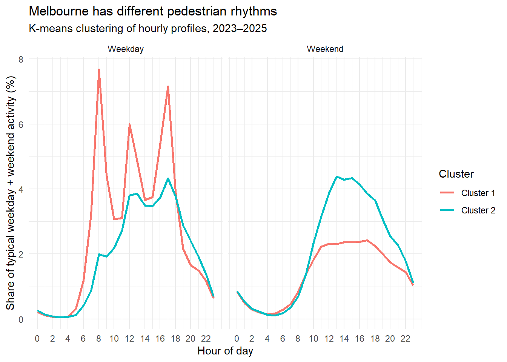

A reproducible analysis of pedestrian activity, 2009–2026
Executive summary
Cities reveal themselves through movement. This report uses the City of Melbourne’s Pedestrian Counting System to examine walking activity across central Melbourne by hour, day, month and year from May 2009 to October 2026. It integrates more than seven million sensor-hour records from 118 locations and links them to public holidays, permitted events and daily weather. The guiding question is whether the city’s pedestrian “pulse” has returned to its pre-pandemic pattern, and whether recovery has been uniform across time and place.
Four findings stand out. First, the rhythm remains strongly structured: activity peaks in the late afternoon, stays high through the middle of the day, falls to a minimum around 04:00, and is higher on Friday and Saturday than on Sunday and Monday. Second, recovery is incomplete: across 27 locations measured consistently in 2017–2019 and 2023–2025, median daily activity is 28.5% lower in the later period. Third, deviations from routine are systematic: public holidays account for 35.5% of significant dips though only 3.7% of eligible days (9.7 times enrichment), while days with at least 20 mm of rain have a 35.7% dip rate versus 1.3% on dry days. Fourth, the city contains at least two activity regimes: a commuter profile with sharp morning and evening peaks, and a visitor profile with a broad midday plateau.
The report contributes an auditable integration of a discontinuous record, a transparent definition of “unusual” days, and an interpretation distinguishing commuter from leisure demand. It concludes that Melbourne’s pulse has not simply slowed: its composition has changed. Planning should respond to a more distributed, weather-sensitive and event-led pattern of activity.
1. Introduction
Pedestrian activity is an immediate indicator of urban vitality. It registers the routines of workers, residents, shoppers and visitors, and responds quickly to changes in transport, employment, weather, culture and public space. For Melbourne, whose centre depends heavily on walking, hourly counts offer an unusually detailed record of how the city is used. The City of Melbourne has operated an automated network since 2009, spanning sustained growth, the COVID-19 pandemic and an uneven recovery.
This report asks four questions: What are the characteristic daily, weekly, monthly and seasonal rhythms across the record? How have the level and composition of activity changed over the long term, particularly through COVID-19? Which days depart significantly from expected activity, and to what extent are those departures associated with public holidays, permitted events and weather? Do locations share a common rhythm, or are there distinct pedestrian regimes within the city?
Answering these questions requires more than plotting totals. The network has expanded, sensors have been added and relocated, annual snapshots overlap with the live API, and some historical timestamps required repair. Data integration is therefore part of the argument. The final dataset contains more than seven million records with no duplicate sensor-hour keys, no missing counts and no invalid hours after cleaning, which makes it possible to compare like with like rather than mistaking changes in measurement for changes in behaviour.
Section 2 describes the data and methods. Section 3 presents results on data integrity, temporal rhythm, long-term change and COVID-19, outlier days and events, weather, and spatial structure. Section 4 interprets the findings, Section 5 discusses limitations, and Section 6 concludes.
2. Data and methods
2.1 Data sources and integration
The primary dataset is the City of Melbourne Pedestrian Counting System, which records hourly counts from automated sensors across the central city. Two extracts were used: a historical monthly file for May 2009 to December 2022, and a current API extract extending coverage to 12 October 2026. Because the files use different column names and, in places, different hour conventions, both were standardised to a common schema: location identifier, sensing date, hour of day, pedestrian count and source. For reproducibility, a prepared 2009–2025 archive accompanies the repository; when the 423 MB raw extract is not present, the archive supplies the historical records and the same hour repair is applied to them.
Annual snapshot files for 2022 to 2025 were also supplied, because the live API does not necessarily preserve every historical record in a stable form. Each snapshot was checked for date coverage, sensor coverage, hourly observations and duplicate location-date-hour keys. All four contained 24 distinct hours per day and complete calendar coverage: 365 days in 2022, 2023 and 2025, and 366 days in 2024. Reporting sensors rose from 80 in 2022 to 94 in 2023, 100 in 2024 and 102 in 2025.
The snapshots were then compared with API-derived records. The 2022 snapshot contains 589,155 observations and reconciles exactly with the sum of its two direction fields. Against the early API extract, 10,298 records differed, concentrated at location 6. These differences were traced to duplicated timestamps: where 24 distinct hourly observations carried repeated time labels, the hour sequence was reconstructed from record order and the repaired observations were flagged. For 2024 and 2025, every overlapping record matched exactly. The 2022–2025 snapshots were therefore used in place of the API records for those years.
The final dataset spans 1 May 2009 to 12 October 2026 and contains 7,525,644 sensor-hour records from 118 locations. Validation found no duplicate location-date-hour combinations, missing counts, negative counts or hours outside 0–23. Coverage is uneven before 2017, and 2009 and 2026 are partial years; these features are retained and flagged.
Three external datasets support interpretation. Daily weather from Open-Meteo covers 6,338 days to 6 September 2026, with no missing rainfall values; variables are rainfall, maximum and minimum temperature, and maximum wind speed. Victorian public holidays came from the official state calendar for 2019 and 2023–2026. Event permits for 2014–2018 came from the City of Melbourne open data portal; of 2,827 records, 749 were suitable for automatic matching, while long or incomplete permits were excluded.
Show code
# Loading all the libraries#| message: false#| warning: falselibrary(tidyverse)library(lubridate)library(janitor)library(fs)library(httr2)library(arrow)library(here)library(ggrepel)library(plotly)library(leaflet)library(slider)library(cluster)library(data.table)
Show code
# Current data through APIdir_create("Data_pedestrians/raw2")raw_path <-"Data_pedestrians/raw2/pedestrian_counts_raw.csv"pedestrian_url <-paste0("https://data.melbourne.vic.gov.au/","api/explore/v2.1/catalog/datasets/","pedestrian-counting-system-monthly-counts-per-hour/","exports/csv?delimiter=%2C&with_bom=false")# Download once and reuse the local cache on subsequent renders.if (!file.exists(raw_path) ||file.info(raw_path)$size <1e6) {request(pedestrian_url) |>req_perform(path = raw_path)}current <-read_csv(here("Data_pedestrians","raw2","pedestrian_counts_raw.csv" ),show_col_types =FALSE) |>clean_names()current_clean <- current |>filter( sensing_date <=as.Date("2026-10-12") ) |>transmute( location_id, sensing_date, hourday,pedestrian_count = pedestriancount,source ="Current API" )
Show code
# Historical data# The original monthly extract is 423 MB and is distributed separately.# When it is available locally the raw file is repaired below; otherwise the# prepared 2009-2025 archive (which already contains the repaired historical# rows) is used so that the document remains reproducible from the repository.raw_historical_path <-here("Data_pedestrians","raw","Pedestrian_Counting_System_Monthly_counts_per_hour_may_2009_to_14_dec_2022.csv")historical_cache_path <-here("Data_pedestrians","raw2","pedestrian_full_2009_2025.csv.gz")if (file.exists(raw_historical_path) &&file.info(raw_historical_path)$size >1e6) { historical <-read_csv( raw_historical_path,show_col_types =FALSE ) |>clean_names()# Historical data standarise historical_clean <- historical |>mutate(sensing_date =mdy(str_c(month, mdate, year, sep =" ") ) ) |>group_by( sensor_id, sensing_date ) |>arrange( id,.by_group =TRUE ) |>mutate(hour_repaired =n() ==24&n_distinct(time) ==1,hourday =if_else( hour_repaired,row_number() -1, time ) ) |>ungroup() |>transmute(location_id = sensor_id, sensing_date, hourday,pedestrian_count = hourly_counts, hour_repaired,source ="Historical" )} else { historical <-read_csv( historical_cache_path,col_select =c( sensing_date, hourday, location_id, pedestrian_count, source ),show_col_types =FALSE )# The archived extract is already ordered by record within each sensor-day,# so the same repair used for the raw file can be reproduced here: where a# sensor-day holds 24 records but a single repeated hour label, the labels# are rebuilt from record order and the observations are flagged. historical_clean <- historical |>filter(source =="historical") |>group_by(location_id, sensing_date) |>mutate(hour_repaired =n() ==24&min(hourday) ==max(hourday),hourday =if_else(hour_repaired, row_number() -1L, hourday) ) |>ungroup() |>transmute( location_id,sensing_date =as.Date(sensing_date), hourday, pedestrian_count, hour_repaired,source ="Historical" )# API rows for 2024 and 2025 are retained separately so that the snapshot# validation below has something to compare against without duplicating the# 2022 historical records in the working dataset. archive_api <- historical |>filter(source =="api") |>transmute( location_id,sensing_date =as.Date(sensing_date), hourday, pedestrian_count,hour_repaired =FALSE,source ="API archive" )rm(historical)invisible(gc())}if (!exists("archive_api")) { archive_api <- historical_clean |>filter(FALSE)}
# Check for duplicatesduplicates <- pedestrian_full |>count( location_id, sensing_date, hourday,name ="n" ) |>filter(n >1)# Report the size of the problem rather than printing one row per key.duplicates |>summarise(duplicated_keys =n(),excess_records =sum(n -1),max_repeats =if_else(n() ==0, 0L, max(n)) )
# A tibble: 0 × 4
# ℹ 4 variables: location_id <dbl>, sensing_date <date>, hourday <dbl>, n <int>
A small number of historical sensor-day groups contained 24 distinct hourly count observations but duplicated timestamps; where the record ordering clearly preserved the hourly sequence, hour labels were reconstructed from record order, with repaired observations flagged.
Recieved this data on 29/09/2026 from data operations manager at city of melbourne on personal mail.
The basic unit is the sensor-hour. For daily measures, counts were summed across available hours for each sensor and date, excluding days with fewer than 20 observed hours; clustering used a 23-hour threshold. Citywide statements use the median across sensors rather than the sum.
Two normalised measures make comparison across years possible. The hourly activity index divides the average count at each hour by the year’s overall mean and multiplies by 100; the weekly index applies the same logic to days of the week. Because each year is normalised against its own mean, the index describes the shape of the rhythm rather than its absolute level. Absolute change is measured separately using median daily counts.
Long-term change uses a balanced panel of 27 sensors that recorded at least 300 days in every year from 2017 to 2019 and 2023 to 2025. This removes the effect of network growth and relocation. For each sensor-day, counts were summed across hours; median daily counts were calculated for the two periods, and percentage change derived from those medians. The COVID-19 analysis instead indexes each sensor-month against its own same-month mean for 2015–2019, with the citywide index taken as the median across sensors with at least 20 observed days.
Unusual days are defined against a local calendar expectation. For each sensor, day of week and date, expected activity is the median daily count on the same weekday in the four weeks before and after the date, excluding the date itself. A significant citywide surge requires median uplift of at least +20% and at least 30% of sensors more than 20% above expectation; a dip uses the mirror thresholds, with at least ten sensors reporting.
Holiday enrichment compares the share of significant dips on public holidays with the share of all eligible days that are holidays. Weather comparisons exclude public holidays, and rainfall is examined as a 10 mm threshold and in six ordered groups.
K-means clustering uses a 48-dimensional profile of typical activity shares across weekday and weekend hours. Sensors with at least 80% daily coverage in 2023–2025 were retained (44 locations). Profiles were compared by Euclidean distance, and two-to-five-cluster solutions evaluated with mean silhouette width. The two-cluster solution performed best (0.442, versus 0.252–0.270) and is used descriptively.
The integrated dataset passes the tests required for longitudinal analysis (the validation table below). The absence of duplicate keys is particularly important: otherwise repeated records could inflate counts in busy periods and distort seasonal averages and outlier detection. The main residual issue is timestamp repair. In September 2010, 12,240 records across 17 sensors carried a single repeated hour label on every day of the month; the hourly sequence was rebuilt from record order and the affected rows are flagged. A further 10,298 records (1.7% of the year’s observations) differed between the early API extract and the 2022 snapshot for the same reason, and the validated 2022 snapshot is used in their place. Because the repair preserved the hourly sequence, the effect on annual and monthly aggregates is likely small, but flagged records warrant caution in future hour-level analysis.
Show code
knitr::kable( final_check,digits =0)
Table 1: Validation of the integrated pedestrian dataset.
total_rows
unique_sensor_hour_records
duplicate_rows
missing_counts
first_date
last_date
7525644
7525644
0
0
2009-05-01
2026-10-12
The network’s changing composition is a second structural feature. Reporting sensors rose from 80 in 2022 to 102 in 2025, and the historical network was smaller before 2017. This is why the long-term comparison uses a balanced panel of 27 sensors and why citywide figures are medians across sensors rather than sums. A rising sensor count would otherwise create the false impression of rising activity even if behaviour were unchanged.
3.2 Daily and weekly rhythm
Melbourne’s daily pulse is strongly asymmetric. Across the full record, activity is lowest at 04:00, when the hourly index is about 5% of the annual average. It rises through the morning, reaches a broad midday plateau, and peaks at 17:00, when the index is about 222. The afternoon peak is therefore not solely a commuting phenomenon: the midday index is about 203 at 13:00, almost as high. This shape fits a mixed-use centre combining office work, retail, education, tourism and hospitality, not a pure commuter corridor.
The shape has changed since 2019. The 08:00 index fell from 128 to 108 between 2019 and 2025, while the 17:00 index remained high, falling only from 227 to 216. The morning peak has therefore softened much more than the evening peak, which is consistent with hybrid working: fewer workers make the early trip, but the city still fills during the day and after work. Midday hours have been comparatively resilient, helping explain why aggregate activity can remain substantial even when the traditional commuter peak weakens.
The weekly rhythm tells a similar story. Across all years, Friday is strongest (median index 115.8), followed by Thursday (105.6) and Wednesday (103.6); Sunday is weakest (82.9). But the weekday–weekend gap has narrowed. In 2019, Saturday registered 94.5 against Friday’s 115.5, a gap of 21 index points; in 2025, Saturday reached 107.5 against Friday’s 108.9, a gap of only 1.4 points. Over the same period, Monday fell from 96.5 to 89.5 and Sunday rose from 78.7 to 87.9. Melbourne’s weekend is no longer simply quieter than its working week; it is now a more important part of the pedestrian economy.
3.3 Monthly and seasonal rhythm
At the monthly scale, activity follows a consistent seasonal arc. Average daily counts rise from January to a March peak of roughly 10,800, decline through autumn, reach a June trough of roughly 8,700, and recover to a December level of roughly 10,400. The March and December peaks are separated by a winter trough almost 20% below March. The pattern is not a simple summer maximum: March, April and December are strong, while June, July and August are weak. This fits Melbourne’s event calendar, university terms, retail cycles and the discomfort of winter walking, rather than temperature alone.
The monthly figure below shows this rhythm across all available sensor data. The seasonal aggregation that follows confirms the structure: summer and autumn are strongest, winter weakest, and spring intermediate. The differences are modest but consistent, which matters for operations: an average that ignores season will over-predict winter demand and under-predict late-summer and pre-Christmas demand. Seasonality also complicates weather effects, because rain is more common in cooler months.
Show code
# Monthly rhythm using the full available dataset: 2009–2026monthly_profile <- pedestrian_full |>filter( year >=2009, year <=2026 ) |>group_by( location_id, sensing_date, month, month_name ) |>summarise(daily_count =sum( pedestrian_count,na.rm =TRUE ),.groups ="drop" ) |>group_by( location_id, month, month_name ) |>summarise(sensor_month_mean =mean( daily_count,na.rm =TRUE ),.groups ="drop" ) |>group_by( month, month_name ) |>summarise(mean_daily_count =mean( sensor_month_mean,na.rm =TRUE ),.groups ="drop" ) |>arrange(month)
seasonal_profile <- pedestrian_full |># Step 1: Daily total for each sensorgroup_by( location_id, year, sensing_date, season ) |>summarise(daily_count =sum( pedestrian_count,na.rm =TRUE ),.groups ="drop" ) |># Step 2: Typical activity for each sensor in each season/yeargroup_by( location_id, year, season ) |>summarise(sensor_season_mean =mean( daily_count,na.rm =TRUE ),.groups ="drop" ) |># Step 3: Typical city activity within each year and seasongroup_by( year, season ) |>summarise(yearly_season_mean =mean( sensor_season_mean,na.rm =TRUE ),.groups ="drop" ) |># Step 4: Average seasonal pattern across all available yearsgroup_by(season) |>summarise(mean_daily_count =mean( yearly_season_mean,na.rm =TRUE ),.groups ="drop" ) |>mutate(season =fct_relevel( season,"Summer","Autumn","Winter","Spring" ) )
The balanced 27-sensor comparison provides the clearest answer to the recovery question. Median daily activity was 10,091 in 2017–2019 and 7,211 in 2023–2025, a decline of 28.5% (see the comparison figure below). This is a large gap after three full post-pandemic years, and it is neither an artefact of network growth nor driven by missing days: the same sensors are used in both periods and each recorded at least 300 days every year. Central Melbourne’s pedestrian economy therefore remains materially smaller than before COVID-19, even after the reopenings of 2022 and 2023.
The monthly COVID-19 index shows how the disruption unfolded in the figure further below. Relative to the same-month 2015–2019 baseline, activity fluctuated around 100 from 2015 to early 2020. It collapsed in the second quarter of 2020, fell below 10 index points during the deepest lockdown, and remained volatile through 2020 and 2021 as restrictions tightened and eased. The 2021 lockdowns produced repeated troughs, with the index falling to roughly 18–20 in several months. Recovery began in late 2021, accelerated in early 2022, and reached the mid-80s by late 2022. The trajectory is one of partial recovery followed by a plateau, not a return to the old level.
The difference between the mid-80s recovery in late 2022 and the 28.5% gap in 2023–2025 is partly methodological: the COVID index uses a 2015–2019 same-month baseline and all sensors with sufficient coverage, while the long-term comparison uses a fixed 27-sensor panel and a 2017–2019 baseline. Both point in the same direction: the city regained much of its former activity but not all, and the residual gap is large enough to be structural. The weekly evidence suggests missing activity is concentrated in commuter hours and early-week days, while weekend and midday activity held up better.
The calendar-adjusted analysis identifies 62 significant citywide dips in 2019 and 2023–2026. Of these, 22 fall on Victorian public holidays. Holidays make up only 3.7% of the 1,718 eligible days but 35.5% of significant dip days, an enrichment factor of 9.7. They are therefore not minor perturbations: they reorganise the city’s walking economy.
The public-holiday table below lists the holiday dips. Christmas Day is the most consistent and deepest suppression: the four Christmas Days in the window record median decreases of 50.0%, 44.4%, 43.2% and 38.1%. Australia Day, ANZAC Day, Good Friday, Boxing Day, the AFL Grand Final Friday and Melbourne Cup Day also appear repeatedly. These are days when offices, universities, courts and many shops close, and activity shifts to suburban retail, family homes and leisure destinations. Magnitudes vary by year, likely reflecting weather, the weekday on which the holiday fell, and post-COVID changes in the baseline.
event_permits_qc <- event_permits_relevant |>mutate(duration_days =as.numeric(event_end - event_start) +1,permit_match_class =case_when(is.na(event_end) ~"Missing end date", duration_days <=7~"Suitable for automatic matching", duration_days <=30~"Extended permit - inspect manually", duration_days >30~"Long permit window - do not auto-match" ) )event_permits_qc |>count( permit_match_class,sort =TRUE )
# A tibble: 4 × 2
permit_match_class n
<chr> <int>
1 Suitable for automatic matching 749
2 Extended permit - inspect manually 112
3 Long permit window - do not auto-match 59
4 Missing end date 2
Show code
event_permits_auto <- event_permits_qc |>filter( permit_match_class =="Suitable for automatic matching" )event_permits_extended <- event_permits_qc |>filter( permit_match_class !="Suitable for automatic matching" )
The permits cover 2014–2018, so event attribution cannot be extended with the same confidence to later years. The post-2022 record contains several large surges, including 24 August 2025 (+26.2%), 8 March 2026 (+26.0%) and 18 February 2024 (+24.1%), but these are identified from pedestrian data alone. They are candidate event days for future verification, not confirmed attributions.
### Identify Public Holidays Associated with Significant Decreasespublic_holiday_dips <- decrease_holiday_test %>%filter(holiday_status =="Public holiday") %>%select( sensing_date, holiday, median_decrease, sensors_reporting ) %>%arrange(median_decrease)knitr::kable( public_holiday_dips,digits =1,caption ="Significant Pedestrian Decreases on Victorian Public Holidays")
Significant Pedestrian Decreases on Victorian Public Holidays
sensing_date
holiday
median_decrease
sensors_reporting
2023-12-25
Christmas Day
-50.0
77
2025-12-25
Christmas Day
-44.4
91
2024-12-25
Christmas Day
-43.2
86
2019-01-28
Australia day
-42.9
49
2019-12-25
Christmas day
-38.1
52
2025-01-27
Australia Day - As Australia Day falls on a Sunday the public holiday is on the following Monday
-37.8
84
2019-04-25
ANZAC Day
-34.9
51
2019-09-27
Friday before the AFL grand final
-32.3
50
2024-12-26
Boxing Day
-31.5
86
2019-04-19
Good Friday
-30.9
51
2023-11-07
Melbourne Cup
-30.1
78
2024-04-01
Easter Monday
-29.8
75
2019-04-22
Easter Monday
-29.2
51
2019-11-05
Melbourne Cup day
-26.6
54
2019-01-01
New Years Day
-25.3
49
2023-04-07
Good Friday
-25.1
69
2025-04-25
ANZAC Day
-25.0
87
2025-11-04
Melbourne Cup
-24.3
89
2023-01-02
New Year’s Day - additional public holiday
-24.0
67
2019-06-10
Queen’s Birthday
-23.8
52
2024-11-05
Melbourne Cup
-23.1
86
2025-06-09
Kings’s Birthday
-21.7
81
Holiday dips should be distinguished from event surges: holidays suppress routine commuter activity, while major events can concentrate and amplify it. The event table below summarises the strongest event-linked surges. Within the 2014–2018 permit window, the largest occurred on 22 February 2014, when median activity was 51.7% above expectation and 80% of reporting sensors were more than 20% above benchmark; the single largest surge of the whole record, 31 December 2019, is larger still but falls outside the permit data. Permits link that date to four events, including the Australian Henley Regatta, the 100mm Car Festival, White Night and the MS Melbourne Cycle. Other surges align with major runs, parades, White Night and New Year’s Eve. Events can temporarily override the ordinary weekday and seasonal structure.
Weather is associated with large differences in the probability of a significant dip. After excluding public holidays, there were 40 significant dip days and 1,615 other days (see the weather comparison below). On dip days, median rainfall was 11.3 mm versus 0.2 mm; 55.0% of dip days had at least 10 mm of rain, versus 4.2% of other days. Median maximum wind was also higher (24.6 versus 19.8 km/h). Median maximum temperature was 20.6°C on dip days and 18.5°C on other days, which likely reflects the seasonal timing of rain-bearing systems once holidays are removed; temperature should not be read as protective.
The rainfall gradient is more informative than any single threshold (see the rainfall table below). On dry days, 1.3% were significant dip days; at 5–10 mm the rate rose to 6.4%, at 10–20 mm to 17.4%, and at 20 mm or more to 35.7%. The relationship is not perfectly monotonic at very low rainfall, but the increase above 5 mm is clear and large. Heavy rain does not merely reduce counts slightly; it changes the probability that the whole city has an unusually quiet day, which matters for staffing, transport and public-space operations.
Compare Pedestrian Dip Frequency on Heavy Rainfall Days
Show code
rain_dip_frequency <- weather_dip_daily %>%filter(!public_holiday) %>%mutate(rain_category =if_else( rainfall_mm >=10,"Heavy rainfall (10 mm or more)","Less than 10 mm rainfall" ) ) %>%group_by(rain_category) %>%summarise(total_days =n(),significant_dip_days =sum(significant_dip),dip_percentage =round(mean(significant_dip) *100,1 ),.groups ="drop" )print(rain_dip_frequency, width =Inf)
# A tibble: 3 × 4
rain_category total_days significant_dip_days dip_percentage
<chr> <int> <int> <dbl>
1 Heavy rainfall (10 mm or more) 89 22 24.7
2 Less than 10 mm rainfall 1558 18 1.2
3 <NA> 8 0 0
Significant Pedestrian Decreases by Rainfall Amount
Show code
rainfall_levels <- weather_dip_daily %>%filter(!public_holiday) %>%mutate(rainfall_group =case_when( rainfall_mm ==0~"No rain", rainfall_mm <2~"0–2 mm", rainfall_mm <5~"2–5 mm", rainfall_mm <10~"5–10 mm", rainfall_mm <20~"10–20 mm",TRUE~"20 mm or more" ),rainfall_group =factor( rainfall_group,levels =c("No rain","0–2 mm","2–5 mm","5–10 mm","10–20 mm","20 mm or more" ) ) ) %>%group_by(rainfall_group) %>%summarise(total_days =n(),significant_dip_days =sum(significant_dip),dip_percentage =round(mean(significant_dip) *100,1 ),.groups ="drop" )print(rainfall_levels, n =Inf)
# A tibble: 6 × 4
rainfall_group total_days significant_dip_days dip_percentage
<fct> <int> <int> <dbl>
1 No rain 717 9 1.3
2 0–2 mm 542 1 0.2
3 2–5 mm 189 1 0.5
4 5–10 mm 110 7 6.4
5 10–20 mm 69 12 17.4
6 20 mm or more 28 10 35.7
The results are associational: rainfall correlates with season, cloud cover and event cancellations, and the analysis cannot isolate rain’s direct discomfort from alternative-activity effects. Weather is nonetheless a first-order source of day-to-day variation, comparable to the calendar.
Interactive Rainfall Intensity and Pedestrian Decreases
# Combine weather, pedestrian changes and holiday namesweather_holiday_yearly <- weather_dip_daily %>%left_join( holiday_calendar_official %>%group_by(holiday_date) %>%summarise(holiday =paste(unique(holiday), collapse =" / "),.groups ="drop" ),by =c("sensing_date"="holiday_date") ) %>%mutate(year_label =factor(as.character(lubridate::year(sensing_date)),levels =c("2019", "2023", "2024", "2025", "2026") ),# Align all years by month and day for comparisonplot_date =as.Date(paste0("2024-", format(sensing_date, "%m-%d")) ),holiday_name =coalesce( holiday,"Not a public holiday" ),hover_text =paste0("Date: ", format(sensing_date, "%d %B %Y"),"<br>Holiday: ", holiday_name,"<br>Median pedestrian change: ",round(median_decrease, 1), "%","<br>Rainfall: ", rainfall_mm, " mm","<br>Maximum temperature: ", max_temperature_c, "°C","<br>Minimum temperature: ", min_temperature_c, "°C","<br>Maximum wind speed: ", max_wind_kmh, " km/h","<br>Sensors reporting: ", sensors_reporting ) ) %>%arrange(year_label, plot_date)
Show code
### Smoothed Pedestrian Changes, Weather and Holidays by Yearsmoothed_yearly_data <- weather_holiday_yearly %>%group_by(year_label) %>%arrange(sensing_date, .by_group =TRUE) %>%mutate(smoothed_change = slider::slide_dbl( median_decrease,~median(.x, na.rm =TRUE),.before =3,.after =3 ) ) %>%ungroup()# Coloured line for each yearsmoothed_yearly_plot <- plotly::plot_ly(data = smoothed_yearly_data,x =~plot_date,y =~smoothed_change,color =~year_label,type ="scatter",mode ="lines",line =list(width =2),text =~paste0( hover_text,"<br>7-day median change: ",round(smoothed_change, 1), "%" ),hoverinfo ="text")# Actual significant decreases on public holidayssmoothed_yearly_plot <- smoothed_yearly_plot %>% plotly::add_markers(data = smoothed_yearly_data %>%filter(significant_dip, public_holiday),x =~plot_date,y =~median_decrease,text =~hover_text,hoverinfo ="text",name ="Public holiday dip",marker =list(color ="#E87932", size =9),inherit =FALSE )# Actual significant decreases on other datessmoothed_yearly_plot <- smoothed_yearly_plot %>% plotly::add_markers(data = smoothed_yearly_data %>%filter(significant_dip, !public_holiday),x =~plot_date,y =~median_decrease,text =~hover_text,hoverinfo ="text",name ="Other significant dip",marker =list(color ="#3288BD", size =8),inherit =FALSE )# Month labels from January to Decembermonth_ticks <-seq.Date(as.Date("2024-01-01"),as.Date("2024-12-01"),by ="month")smoothed_yearly_plot <- plotly::layout( smoothed_yearly_plot,title =list(text =paste0("Pedestrian Changes, Weather and Public Holidays by Year","<br><sup>Lines: 7-day rolling median | ","Dots: actual significant pedestrian decreases</sup>" )),xaxis =list(title ="Month of year",tickvals = month_ticks,ticktext =format(month_ticks, "%b"),range =c("2024-01-01", "2024-12-31") ),yaxis =list(title ="Change from expected pedestrian activity (%)" ),hovermode ="closest",legend =list(title =list(text ="Year / Dip type") ))smoothed_yearly_plot
3.7 Spatial structure and activity types
The busiest locations are concentrated in the traditional retail and transport core. In 2025, sensor 41 on Swanston Street recorded a typical daily count of about 40,000, followed by sensor 4 on Swanston Street at about 36,000, sensor 35 at Southbank at about 31,000, sensor 84 on Elizabeth Street at about 29,000, and sensor 66 at QV at about 28,000 (see the busiest-location figure below). Princes, Collins, Bourke and Elizabeth Streets also appear in the top ten. A relatively small number of CBD spines carry a disproportionate share of activity.
Clustering shows that locations do not all share one rhythm. The two-cluster solution separates nine sensors with a sharply peaked weekday profile from 35 with a broader midday profile (see the cluster figure below). Cluster 1 rises steeply at 08:00, falls at midday, rises again at 17:00, and is comparatively quiet at weekends. Cluster 2 rises more gradually, stays high from late morning to late afternoon, and retains a substantial weekend profile. The first is consistent with office and commuter precincts; the second with retail, hospitality and visitor precincts. The weekend panels show the distinction is not absolute—both have a midday hump—but the weekday contrast is strong.
# A tibble: 2 × 2
cluster n
<chr> <int>
1 Cluster 1 9
2 Cluster 2 35
Show code
cluster_profiles <- hourly_profiles |>inner_join( sensor_clusters,by ="location_id" ) |>group_by(cluster, day_type, hourday) |>summarise(typical_share =median(hour_share) *100,.groups ="drop" )cluster_profiles |>ggplot(aes(x = hourday,y = typical_share,colour = cluster ) ) +geom_line(linewidth =1) +facet_wrap(~day_type) +scale_x_continuous(breaks =seq(0, 23, by =2) ) +labs(title ="Melbourne has different pedestrian rhythms",subtitle ="K-means clustering of hourly profiles, 2023–2025",x ="Hour of day",y ="Share of typical weekday + weekend activity (%)",colour ="Cluster" ) +theme_minimal()

The cluster result is a summary of similarity, not a land-use classification. The silhouette of 0.442 indicates moderate separation: the groups are distinguishable but not sharply isolated. Its value is to demonstrate heterogeneity that citywide averages conceal: a policy that revives a commuter precinct may do little in a visitor precinct. Sensor-level dip rates show the same local variation: the highest in 2023–2025 were 35% at sensors 7 and 136, followed by 23.6% at sensor 44, 22.7% at sensor 42 and 22.2% at sensors 29 and 43. These locations warrant investigation, because persistent local volatility is unlikely to be explained by weather or holidays alone.
The results describe a city whose pedestrian life is highly structured but no longer organised around a single peak. The traditional commuter model—busy at 08:00, quiet at midday, busy again at 17:00—still exists but is weakening. The 08:00 index fell substantially between 2019 and 2025, while midday and weekend activity held up; Saturday is now almost as busy as Friday. This is consistent with hybrid work, but also points to something more durable: the centre is increasingly used for consumption, leisure and events, not only as a workplace.
The 28.5% gap in the balanced sensor panel is a warning against declaring recovery complete. Three post-pandemic years is a long time, and the gap is not narrowing quickly. At the same time, it is not evenly distributed. Some locations remain busy, some have persistent dips, and different precincts have different relationships to the working week. A single “CBD recovered?” headline conceals the more useful question: which parts of the city, at which times, for which purposes, have recovered?
The holiday and event results show that the calendar is a major organising force. Public holidays produce deep, predictable reductions in routine activity, with Christmas Day the clearest example; events produce the opposite, lifting the whole network far above expectation. This asymmetry matters for policy. Public holidays are not failures of the city; they are days when activity moves elsewhere. Events are not merely cultural amenities; they are temporary demand shocks that can be planned for, priced for and supported with transport and cleaning capacity.
Weather adds another layer. The rainfall gradient—from a 1.5% dip rate on dry days to 37% on days with 20 mm or more—is large enough to matter for operations and implies that the pedestrian economy is less resilient than an annual average suggests. Covered walkways, protected spaces, drainage and reliable transport become more valuable when walking is rain-sensitive. Higher wind on dip days reinforces that it is the broader experience of inclement weather, not rain alone, that suppresses activity.
The spatial results argue for differentiated management. The Swanston Street spine and retail core carry the largest volumes and are likely to remain the priority for public-space and transport investment. But many sensors operate on a different logic, with midday and weekend orientations; these may benefit more from programming, hospitality support, lighting and family amenities than from commuter-focused interventions. Persistent dips at a few sensors also remind us that local problems—construction, obstructions, changed access, sensor faults—can hide inside a citywide average.
Finally, measurement choices shape the story. A single index based on total counts would show substantial recovery and then a plateau; a balanced panel shows a persistent gap; a weekday-only measure would overstate the loss; an hourly measure reveals that the morning peak weakened more than the evening peak. The most defensible approach is a small dashboard—absolute level, weekday/weekend split, morning/evening split, and spatial dispersion—rather than a single number.
5. Limitations
Several limitations should be acknowledged. First, the analysis is observational. It identifies associations between pedestrian activity and holidays, events and weather, but cannot establish causal effects. Public holidays and events are not randomly assigned, weather is correlated with season, and unobserved factors such as transport disruptions, school holidays and construction could confound the results.
Second, the sensor network is not a random sample of the city. It is concentrated in the CBD and surrounding activity centres, and its composition has changed over time. The 27-sensor balanced panel reduces this problem for the long-term comparison, but may not represent the whole municipality. The 44-sensor clustering sample is also restricted to high-coverage locations.
Third, the historical data required repair. The 2022 reconciliation identified 10,298 records with count differences, concentrated at location 6, and hour labels were reconstructed from record order; the 12,240 records of the September 2010 extract were repaired in the same way. Although internally consistent, the repair introduces uncertainty at the hour level; 2022 should therefore be used more cautiously than the 2024 and 2025 snapshots, which matched exactly on all overlapping records.
Fourth, the event analysis is limited by permit coverage. The permit dataset covers 2014–2018, so attribution cannot be extended to later years, and post-2022 surges are identified statistically but not verified against permits. A single date may also host multiple events, making a surge difficult to attribute to one cause.
Fifth, the definition of a “significant” day uses thresholds—20% deviation and 30% of sensors—that are convenient but ultimately arbitrary; different thresholds would produce different counts of outlier days. The results are best read as a robust description of large deviations, not a definitive inventory.
Sixth, the weather analysis uses daily aggregates from a single series. Rainfall can be localised, and a citywide total may not reflect conditions at a particular sensor. Temperature results are bivariate and should not be read causally. Finally, clustering is descriptive and cross-sectional; it shows that two profiles dominate 2023–2025, not that Melbourne has exactly two types of place or that locations cannot change type.
6. Conclusion
Melbourne’s pedestrian pulse is neither flat nor fully restored. It is a structured rhythm that peaks in the late afternoon, holds up through the middle of the day, varies by season and day of week, and is highly sensitive to holidays, events and rain. The long-term comparison shows a persistent 28.5% gap in median daily activity across consistently measured locations, even as weekend and midday activity proved more resilient than the morning commute. Activity is also spatially uneven: a few CBD spines carry very large volumes, while many locations follow a slower, midday-oriented rhythm.
The most useful conclusion is not that Melbourne has “recovered” or “not recovered”, but that the composition of activity has changed. Commuter demand has weakened, leisure and event demand have become more important, and weather is now a first-order source of day-to-day variation. Planning should reflect that composition: protect the public spaces and transport links that carry high volumes, support precincts dependent on weekend and midday trade, prepare for weather-driven quiet days, and use the calendar to manage both holiday lulls and event surges. A city’s pulse is not a single number but a pattern of times and places, and the better that pattern is understood, the better the city can respond.
References
City of Melbourne. (2026a). Pedestrian Counting System: Monthly counts per hour [Data set]. Melbourne Open Data. https://data.melbourne.vic.gov.au/
City of Melbourne. (2026b). Event permits 2014–2018, including film shoots, photo shoots, weddings and Christmas parties [Data set]. Melbourne Open Data. https://data.melbourne.vic.gov.au/
Open-Meteo. (2026). Historical weather API [Data set]. https://open-meteo.com/
R Core Team. (2025). R: A language and environment for statistical computing. R Foundation for Statistical Computing. https://www.R-project.org/
Victorian Government. (2026). Victorian public holidays. https://www.vic.gov.au/public-holidays
Source Code
---title: "Pulse of Melbourne"subtitle: "A reproducible analysis of pedestrian activity, 2009–2026"format: html: toc: true toc-depth: 2 toc-location: left toc-title: "Contents" code-fold: true code-summary: "Show code" code-tools: true theme: cosmo fig-width: 9 fig-height: 5.5 fig-align: centerexecute: warning: false message: falseeditor: visual---# Executive summaryCities reveal themselves through movement. This report uses the City of Melbourne's Pedestrian Counting System to examine walking activity across central Melbourne by hour, day, month and year from May 2009 to October 2026. It integrates more than seven million sensor-hour records from 118 locations and links them to public holidays, permitted events and daily weather. The guiding question is whether the city's pedestrian "pulse" has returned to its pre-pandemic pattern, and whether recovery has been uniform across time and place.Four findings stand out. First, the rhythm remains strongly structured: activity peaks in the late afternoon, stays high through the middle of the day, falls to a minimum around 04:00, and is higher on Friday and Saturday than on Sunday and Monday. Second, recovery is incomplete: across 27 locations measured consistently in 2017–2019 and 2023–2025, median daily activity is 28.5% lower in the later period. Third, deviations from routine are systematic: public holidays account for 35.5% of significant dips though only 3.7% of eligible days (9.7 times enrichment), while days with at least 20 mm of rain have a 35.7% dip rate versus 1.3% on dry days. Fourth, the city contains at least two activity regimes: a commuter profile with sharp morning and evening peaks, and a visitor profile with a broad midday plateau.The report contributes an auditable integration of a discontinuous record, a transparent definition of "unusual" days, and an interpretation distinguishing commuter from leisure demand. It concludes that Melbourne's pulse has not simply slowed: its composition has changed. Planning should respond to a more distributed, weather-sensitive and event-led pattern of activity.# 1. IntroductionPedestrian activity is an immediate indicator of urban vitality. It registers the routines of workers, residents, shoppers and visitors, and responds quickly to changes in transport, employment, weather, culture and public space. For Melbourne, whose centre depends heavily on walking, hourly counts offer an unusually detailed record of how the city is used. The City of Melbourne has operated an automated network since 2009, spanning sustained growth, the COVID-19 pandemic and an uneven recovery.This report asks four questions: What are the characteristic daily, weekly, monthly and seasonal rhythms across the record? How have the level and composition of activity changed over the long term, particularly through COVID-19? Which days depart significantly from expected activity, and to what extent are those departures associated with public holidays, permitted events and weather? Do locations share a common rhythm, or are there distinct pedestrian regimes within the city?Answering these questions requires more than plotting totals. The network has expanded, sensors have been added and relocated, annual snapshots overlap with the live API, and some historical timestamps required repair. Data integration is therefore part of the argument. The final dataset contains more than seven million records with no duplicate sensor-hour keys, no missing counts and no invalid hours after cleaning, which makes it possible to compare like with like rather than mistaking changes in measurement for changes in behaviour.Section 2 describes the data and methods. Section 3 presents results on data integrity, temporal rhythm, long-term change and COVID-19, outlier days and events, weather, and spatial structure. Section 4 interprets the findings, Section 5 discusses limitations, and Section 6 concludes.# 2. Data and methods## 2.1 Data sources and integrationThe primary dataset is the City of Melbourne Pedestrian Counting System, which records hourly counts from automated sensors across the central city. Two extracts were used: a historical monthly file for May 2009 to December 2022, and a current API extract extending coverage to 12 October 2026. Because the files use different column names and, in places, different hour conventions, both were standardised to a common schema: location identifier, sensing date, hour of day, pedestrian count and source. For reproducibility, a prepared 2009–2025 archive accompanies the repository; when the 423 MB raw extract is not present, the archive supplies the historical records and the same hour repair is applied to them.Annual snapshot files for 2022 to 2025 were also supplied, because the live API does not necessarily preserve every historical record in a stable form. Each snapshot was checked for date coverage, sensor coverage, hourly observations and duplicate location-date-hour keys. All four contained 24 distinct hours per day and complete calendar coverage: 365 days in 2022, 2023 and 2025, and 366 days in 2024. Reporting sensors rose from 80 in 2022 to 94 in 2023, 100 in 2024 and 102 in 2025.The snapshots were then compared with API-derived records. The 2022 snapshot contains 589,155 observations and reconciles exactly with the sum of its two direction fields. Against the early API extract, 10,298 records differed, concentrated at location 6. These differences were traced to duplicated timestamps: where 24 distinct hourly observations carried repeated time labels, the hour sequence was reconstructed from record order and the repaired observations were flagged. For 2024 and 2025, every overlapping record matched exactly. The 2022–2025 snapshots were therefore used in place of the API records for those years.The final dataset spans 1 May 2009 to 12 October 2026 and contains 7,525,644 sensor-hour records from 118 locations. Validation found no duplicate location-date-hour combinations, missing counts, negative counts or hours outside 0–23. Coverage is uneven before 2017, and 2009 and 2026 are partial years; these features are retained and flagged.Three external datasets support interpretation. Daily weather from Open-Meteo covers 6,338 days to 6 September 2026, with no missing rainfall values; variables are rainfall, maximum and minimum temperature, and maximum wind speed. Victorian public holidays came from the official state calendar for 2019 and 2023–2026. Event permits for 2014–2018 came from the City of Melbourne open data portal; of 2,827 records, 749 were suitable for automatic matching, while long or incomplete permits were excluded.```{r}# Loading all the libraries#| message: false#| warning: falselibrary(tidyverse)library(lubridate)library(janitor)library(fs)library(httr2)library(arrow)library(here)library(ggrepel)library(plotly)library(leaflet)library(slider)library(cluster)library(data.table)``````{r}# Current data through APIdir_create("Data_pedestrians/raw2")raw_path <-"Data_pedestrians/raw2/pedestrian_counts_raw.csv"pedestrian_url <-paste0("https://data.melbourne.vic.gov.au/","api/explore/v2.1/catalog/datasets/","pedestrian-counting-system-monthly-counts-per-hour/","exports/csv?delimiter=%2C&with_bom=false")# Download once and reuse the local cache on subsequent renders.if (!file.exists(raw_path) ||file.info(raw_path)$size <1e6) {request(pedestrian_url) |>req_perform(path = raw_path)}current <-read_csv(here("Data_pedestrians","raw2","pedestrian_counts_raw.csv" ),show_col_types =FALSE) |>clean_names()current_clean <- current |>filter( sensing_date <=as.Date("2026-10-12") ) |>transmute( location_id, sensing_date, hourday,pedestrian_count = pedestriancount,source ="Current API" )``````{r}# Historical data# The original monthly extract is 423 MB and is distributed separately.# When it is available locally the raw file is repaired below; otherwise the# prepared 2009-2025 archive (which already contains the repaired historical# rows) is used so that the document remains reproducible from the repository.raw_historical_path <-here("Data_pedestrians","raw","Pedestrian_Counting_System_Monthly_counts_per_hour_may_2009_to_14_dec_2022.csv")historical_cache_path <-here("Data_pedestrians","raw2","pedestrian_full_2009_2025.csv.gz")if (file.exists(raw_historical_path) &&file.info(raw_historical_path)$size >1e6) { historical <-read_csv( raw_historical_path,show_col_types =FALSE ) |>clean_names()# Historical data standarise historical_clean <- historical |>mutate(sensing_date =mdy(str_c(month, mdate, year, sep =" ") ) ) |>group_by( sensor_id, sensing_date ) |>arrange( id,.by_group =TRUE ) |>mutate(hour_repaired =n() ==24&n_distinct(time) ==1,hourday =if_else( hour_repaired,row_number() -1, time ) ) |>ungroup() |>transmute(location_id = sensor_id, sensing_date, hourday,pedestrian_count = hourly_counts, hour_repaired,source ="Historical" )} else { historical <-read_csv( historical_cache_path,col_select =c( sensing_date, hourday, location_id, pedestrian_count, source ),show_col_types =FALSE )# The archived extract is already ordered by record within each sensor-day,# so the same repair used for the raw file can be reproduced here: where a# sensor-day holds 24 records but a single repeated hour label, the labels# are rebuilt from record order and the observations are flagged. historical_clean <- historical |>filter(source =="historical") |>group_by(location_id, sensing_date) |>mutate(hour_repaired =n() ==24&min(hourday) ==max(hourday),hourday =if_else(hour_repaired, row_number() -1L, hourday) ) |>ungroup() |>transmute( location_id,sensing_date =as.Date(sensing_date), hourday, pedestrian_count, hour_repaired,source ="Historical" )# API rows for 2024 and 2025 are retained separately so that the snapshot# validation below has something to compare against without duplicating the# 2022 historical records in the working dataset. archive_api <- historical |>filter(source =="api") |>transmute( location_id,sensing_date =as.Date(sensing_date), hourday, pedestrian_count,hour_repaired =FALSE,source ="API archive" )rm(historical)invisible(gc())}if (!exists("archive_api")) { archive_api <- historical_clean |>filter(FALSE)}``````{r}# Combinepedestrian_full <-bind_rows( historical_clean, current_clean) |>filter( sensing_date <=as.Date("2026-10-12") ) |>arrange( sensing_date, location_id, hourday )``````{r}pedestrian_full <- pedestrian_full |>mutate(year = lubridate::year(sensing_date),month = lubridate::month(sensing_date),month_name = lubridate::month( sensing_date,label =TRUE,abbr =FALSE ),day_name = lubridate::wday( sensing_date,label =TRUE,abbr =FALSE,week_start =1 ),day_of_week = lubridate::wday( sensing_date,week_start =1 ),is_weekend = day_of_week >=6,season =case_when( month %in%c(12, 1, 2) ~"Summer", month %in%c(3, 4, 5) ~"Autumn", month %in%c(6, 7, 8) ~"Winter", month %in%c(9, 10, 11) ~"Spring" ) )``````{r}# Check for missing valuespedestrian_full |>summarise(observations =n(),locations =n_distinct(location_id),first_date =min(sensing_date, na.rm =TRUE),last_date =max(sensing_date, na.rm =TRUE),missing_dates =sum(is.na(sensing_date)),missing_hours =sum(is.na(hourday)),missing_counts =sum(is.na(pedestrian_count)) )pedestrian_full |>summarise(negative_counts =sum(pedestrian_count <0, na.rm =TRUE),invalid_hours =sum( hourday <0| hourday >23,na.rm =TRUE ) )# Check for duplicatesduplicates <- pedestrian_full |>count( location_id, sensing_date, hourday,name ="n" ) |>filter(n >1)# Report the size of the problem rather than printing one row per key.duplicates |>summarise(duplicated_keys =n(),excess_records =sum(n -1),max_repeats =if_else(n() ==0, 0L, max(n)) )head(duplicates, 5)```- A small number of historical sensor-day groups contained 24 distinct hourly count observations but duplicated timestamps; where the record ordering clearly preserved the hourly sequence, hour labels were reconstructed from record order, with repaired observations flagged.- Recieved this data on 29/09/2026 from data operations manager at city of melbourne on personal mail.```{r}# Snapshot datasnapshot_dir <- here::here("Data_pedestrians","raw","data_pedestrian")snapshot_files <-list.files( snapshot_dir,pattern ="\\.csv$",full.names =TRUE)snapshot_files# Inspect snapshot file structure snapshot_schema <- purrr::map_dfr( snapshot_files,function(f) { x <- data.table::fread(file = f,nrows =5 ) tibble::tibble(file =basename(f),n_columns =ncol(x),columns =paste(names(x), collapse =" | ") ) })snapshot_schema# Check snapshot data coveragesnapshot_coverage <- purrr::map_dfr( snapshot_files,function(f) { x <- data.table::fread(file = f,select =c("Location_ID","Sensing_Date","HourDay","PedestrianCount" ) )data.frame(file =basename(f),first_date =min(as.Date(x$Sensing_Date)),last_date =max(as.Date(x$Sensing_Date)),days = data.table::uniqueN(x$Sensing_Date),sensors = data.table::uniqueN(x$Location_ID),observations =nrow(x),hours = data.table::uniqueN(x$HourDay) ) })snapshot_coverage# Check daily coveragesnapshot_daily_coverage <- purrr::map_dfr( snapshot_files,function(f) { x <- data.table::fread(file = f,select =c("Sensing_Date") ) dates <-as.Date(x$Sensing_Date)data.frame(file =basename(f),days_observed = data.table::uniqueN(dates),expected_days =ifelse( lubridate::leap_year(min(dates)),366,365 ),missing_days =ifelse( lubridate::leap_year(min(dates)),366,365 ) - data.table::uniqueN(dates) ) })snapshot_daily_coverage# Check for duplicatessnapshot_duplicates <- purrr::map_dfr( snapshot_files,function(f) { x <- data.table::fread(file = f,select =c("Location_ID","Sensing_Date","HourDay" ) ) dup <- x[ , .N, by = .(Location_ID, Sensing_Date, HourDay) ][N >1]data.frame(file =basename(f),duplicate_groups =nrow(dup),duplicated_rows =sum(dup$N -1) ) })snapshot_duplicates```## 2.2 Snapshot validationThe annual snapshots are validated against the API-derived records before theyreplace them in the working dataset.```{r}# 2022 snapshot data# Validate snapshot datasnapshot_2022 <- data.table::fread(file.path(snapshot_dir, "2022_Pedestrian_Data.csv"),select =c("Location_ID","Sensing_Date","HourDay","PedestrianCount" ))historical_2022 <- pedestrian_full %>%filter( year ==2022, source =="Historical" ) %>%select( location_id, sensing_date, hourday, pedestrian_count )# Comparing the snapshot data with the above pedestrian_full datacomparison_2022 <- snapshot_2022 %>%as_tibble() %>%mutate(Sensing_Date =as.Date(Sensing_Date) ) %>%inner_join( historical_2022,by =c("Location_ID"="location_id","Sensing_Date"="sensing_date","HourDay"="hourday" ) ) %>%mutate(count_difference = PedestrianCount - pedestrian_count )summary(comparison_2022$count_difference)# Summary difference comparison_2022 %>%summarise(matched_rows =n(),different_rows =sum(count_difference !=0, na.rm =TRUE),max_difference =max(abs(count_difference), na.rm =TRUE) )# Examine different recordscomparison_2022 %>%filter(count_difference !=0) %>%summarise(different_rows =n(),mean_difference =mean(count_difference),median_difference =median(count_difference),mean_absolute_difference =mean(abs(count_difference)),median_absolute_difference =median(abs(count_difference)),max_absolute_difference =max(abs(count_difference)) )# Examine differences by monthcomparison_2022 %>%filter(count_difference !=0) %>%mutate(month = lubridate::floor_date(Sensing_Date, "month") ) %>%count(month, sort =TRUE)# Examine differences by sensorscomparison_2022 %>%filter(count_difference !=0) %>%count(Location_ID, sort =TRUE)# Inspect largest differences comparison_2022 %>%filter(count_difference !=0) %>%arrange(desc(abs(count_difference))) %>%select( Location_ID, Sensing_Date, HourDay, PedestrianCount, pedestrian_count, count_difference ) %>%head(20)``````{r}# Investigate location 6comparison_2022 %>%filter(Location_ID ==6, count_difference !=0) %>%summarise(n =n(),mean_difference =mean(count_difference),median_difference =median(count_difference),min_difference =min(count_difference),max_difference =max(count_difference) )# Location 6 differences by monthcomparison_2022 %>%filter(Location_ID ==6, count_difference !=0) %>%mutate(month = lubridate::floor_date(Sensing_Date, "month") ) %>%group_by(month) %>%summarise(different_records =n(),mean_difference =mean(count_difference),median_difference =median(count_difference),.groups ="drop" )# Direction of differencescomparison_2022 %>%filter(Location_ID ==6, count_difference !=0) %>%count(direction =case_when( count_difference >0~"Snapshot higher", count_difference <0~"Snapshot lower",TRUE~"Same" ) )# Validate directions totalcomparison_2022 %>%filter(Location_ID ==6, count_difference !=0) %>%arrange(desc(abs(count_difference))) %>%select( Location_ID, Sensing_Date, HourDay, PedestrianCount, pedestrian_count, count_difference ) %>%head(20)``````{r}snapshot_2022_full <- data.table::fread(file.path(snapshot_dir, "2022_Pedestrian_Data.csv"))snapshot_2022_full %>%mutate(direction_total = Direction_1 + Direction_2,difference = PedestrianCount - direction_total ) %>%summarise(rows =n(),exact_match =sum(difference ==0, na.rm =TRUE),different =sum(difference !=0, na.rm =TRUE),max_difference =max(abs(difference), na.rm =TRUE) )snapshot_2022_full %>%filter(Location_ID ==6) %>%summarise(mean_pedestrian_count =mean(PedestrianCount, na.rm =TRUE),mean_direction_total =mean(Direction_1 + Direction_2, na.rm =TRUE),mean_difference =mean( PedestrianCount - (Direction_1 + Direction_2),na.rm =TRUE ) )``````{r}# 2024 snapshot data## Validate the 2024 Snapshot### Load 2024 Snapshotsnapshot_2024 <- data.table::fread(file.path(snapshot_dir, "2024_Pedestrian_Data.csv"),select =c("Location_ID","Sensing_Date","HourDay","PedestrianCount" ))```### Compare with Existing 2024 Data```{r}comparison_2024 <- snapshot_2024 %>%as_tibble() %>%mutate(Sensing_Date =as.Date(Sensing_Date) ) %>%inner_join( archive_api %>%filter(lubridate::year(sensing_date) ==2024) %>%select( location_id, sensing_date, hourday, pedestrian_count ),by =c("Location_ID"="location_id","Sensing_Date"="sensing_date","HourDay"="hourday" ) ) %>%mutate(difference = PedestrianCount - pedestrian_count )comparison_2024 %>%summarise(matched_rows =n(),different_rows =sum(difference !=0, na.rm =TRUE),mean_difference =mean(difference, na.rm =TRUE),max_absolute_difference =max(abs(difference), na.rm =TRUE) )```### Compare with Existing 2025 Data### Load 2025 Snapshot```{r}snapshot_2025 <- data.table::fread(file.path(snapshot_dir, "2025_Pedestrian_Data.csv"),select =c("Location_ID","Sensing_Date","HourDay","PedestrianCount" ))``````{r}comparison_2025 <- snapshot_2025 %>%as_tibble() %>%mutate(Sensing_Date =as.Date(Sensing_Date) ) %>%inner_join( archive_api %>%filter(lubridate::year(sensing_date) ==2025) %>%select( location_id, sensing_date, hourday, pedestrian_count ),by =c("Location_ID"="location_id","Sensing_Date"="sensing_date","HourDay"="hourday" ) ) %>%mutate(difference = PedestrianCount - pedestrian_count )comparison_2025 %>%summarise(matched_rows =n(),different_rows =sum(difference !=0, na.rm =TRUE),mean_difference =mean(difference, na.rm =TRUE),max_absolute_difference =max(abs(difference), na.rm =TRUE) )```## 2.3 Standardisation and integration### Standardise Snapshot Data```{r}snapshot_standardised <- purrr::map_dfr( snapshot_files,function(f) { x <- data.table::fread(file = f) %>%as_tibble() x %>%transmute(location_id =as.numeric(Location_ID),sensing_date =as.Date(Sensing_Date),hourday =as.numeric(HourDay),pedestrian_count =as.numeric(PedestrianCount),hour_repaired =FALSE,source =paste0("city_snapshot_", substr(basename(f), 1, 4)) ) }) %>%mutate(year = lubridate::year(sensing_date),month = lubridate::month(sensing_date),month_name = lubridate::month(sensing_date, label =TRUE),day_name = lubridate::wday(sensing_date, label =TRUE),day_of_week = lubridate::wday(sensing_date, week_start =1),is_weekend = day_of_week >=6,season =case_when( month %in%c(12, 1, 2) ~"Summer", month %in%c(3, 4, 5) ~"Autumn", month %in%c(6, 7, 8) ~"Winter", month %in%c(9, 10, 11) ~"Spring" ) )```### Replace 2022–2025 with Validated Snapshots```{r}## Rebuild final pedestrian dataset### Keep historical data before 2022historical_data <- pedestrian_full %>%filter(!year %in%c(2022, 2023, 2024, 2025)) %>%select( location_id, sensing_date, hourday, pedestrian_count, source,any_of("hour_repaired") )# If the historical dataset does not contain hour_repaired,# create it as FALSE.if (!"hour_repaired"%in%names(historical_data)) { historical_data$hour_repaired <-FALSE}### Prepare validated 2022–2025 snapshotssnapshot_data <- snapshot_standardised %>%select( location_id, sensing_date, hourday, pedestrian_count, source ) %>%mutate(hour_repaired =FALSE )### Combine historical and validated datapedestrian_full_updated <-bind_rows( historical_data, snapshot_data) %>%mutate(year = lubridate::year(sensing_date),month = lubridate::month(sensing_date),month_name = lubridate::month( sensing_date,label =TRUE,abbr =FALSE ),day_name = lubridate::wday( sensing_date,label =TRUE,abbr =FALSE ),day_of_week = lubridate::wday( sensing_date,week_start =1 ),is_weekend = day_of_week >=6,season =case_when( month %in%c(12, 1, 2) ~"Summer", month %in%c(3, 4, 5) ~"Autumn", month %in%c(6, 7, 8) ~"Winter", month %in%c(9, 10, 11) ~"Spring" ) ) %>%arrange( sensing_date, hourday, location_id)```## 2.4 Measures and analytical approachThe basic unit is the sensor-hour. For daily measures, counts were summed across available hours for each sensor and date, excluding days with fewer than 20 observed hours; clustering used a 23-hour threshold. Citywide statements use the median across sensors rather than the sum.Two normalised measures make comparison across years possible. The hourly activity index divides the average count at each hour by the year's overall mean and multiplies by 100; the weekly index applies the same logic to days of the week. Because each year is normalised against its own mean, the index describes the shape of the rhythm rather than its absolute level. Absolute change is measured separately using median daily counts.Long-term change uses a balanced panel of 27 sensors that recorded at least 300 days in every year from 2017 to 2019 and 2023 to 2025. This removes the effect of network growth and relocation. For each sensor-day, counts were summed across hours; median daily counts were calculated for the two periods, and percentage change derived from those medians. The COVID-19 analysis instead indexes each sensor-month against its own same-month mean for 2015–2019, with the citywide index taken as the median across sensors with at least 20 observed days.Unusual days are defined against a local calendar expectation. For each sensor, day of week and date, expected activity is the median daily count on the same weekday in the four weeks before and after the date, excluding the date itself. A significant citywide surge requires median uplift of at least +20% and at least 30% of sensors more than 20% above expectation; a dip uses the mirror thresholds, with at least ten sensors reporting.Holiday enrichment compares the share of significant dips on public holidays with the share of all eligible days that are holidays. Weather comparisons exclude public holidays, and rainfall is examined as a 10 mm threshold and in six ordered groups.K-means clustering uses a 48-dimensional profile of typical activity shares across weekday and weekend hours. Sensors with at least 80% daily coverage in 2023–2025 were retained (44 locations). Profiles were compared by Euclidean distance, and two-to-five-cluster solutions evaluated with mean silhouette width. The two-cluster solution performed best (0.442, versus 0.252–0.270) and is used descriptively.## 2.5 Final validation### Check Yearly Coverage```{r}final_check <- pedestrian_full_updated %>%summarise(total_rows =n(),unique_sensor_hour_records =n_distinct(location_id, sensing_date, hourday),duplicate_rows =n() -n_distinct(location_id, sensing_date, hourday),missing_counts =sum(is.na(pedestrian_count)),first_date =min(sensing_date),last_date =max(sensing_date) )final_check``````{r}pedestrian_full_updated %>%count(year)``````{r}pedestrian_full <- pedestrian_full_updated```# 3. Results## 3.1 A validated foundationThe integrated dataset passes the tests required for longitudinal analysis (the validation table below). The absence of duplicate keys is particularly important: otherwise repeated records could inflate counts in busy periods and distort seasonal averages and outlier detection. The main residual issue is timestamp repair. In September 2010, 12,240 records across 17 sensors carried a single repeated hour label on every day of the month; the hourly sequence was rebuilt from record order and the affected rows are flagged. A further 10,298 records (1.7% of the year's observations) differed between the early API extract and the 2022 snapshot for the same reason, and the validated 2022 snapshot is used in their place. Because the repair preserved the hourly sequence, the effect on annual and monthly aggregates is likely small, but flagged records warrant caution in future hour-level analysis.```{r}#| label: tbl-validation#| tbl-cap: "Validation of the integrated pedestrian dataset."knitr::kable( final_check,digits =0)```The network's changing composition is a second structural feature. Reporting sensors rose from 80 in 2022 to 102 in 2025, and the historical network was smaller before 2017. This is why the long-term comparison uses a balanced panel of 27 sensors and why citywide figures are medians across sensors rather than sums. A rising sensor count would otherwise create the false impression of rising activity even if behaviour were unchanged.## 3.2 Daily and weekly rhythmMelbourne's daily pulse is strongly asymmetric. Across the full record, activity is lowest at 04:00, when the hourly index is about 5% of the annual average. It rises through the morning, reaches a broad midday plateau, and peaks at 17:00, when the index is about 222. The afternoon peak is therefore not solely a commuting phenomenon: the midday index is about 203 at 13:00, almost as high. This shape fits a mixed-use centre combining office work, retail, education, tourism and hospitality, not a pure commuter corridor.The shape has changed since 2019. The 08:00 index fell from 128 to 108 between 2019 and 2025, while the 17:00 index remained high, falling only from 227 to 216. The morning peak has therefore softened much more than the evening peak, which is consistent with hybrid working: fewer workers make the early trip, but the city still fills during the day and after work. Midday hours have been comparatively resilient, helping explain why aggregate activity can remain substantial even when the traditional commuter peak weakens.### Hourly Pedestrian Activity Over Time```{r}hourly_by_sensor_year <- pedestrian_full %>%filter(!is.na(hourday), hourday >=0, hourday <=23 ) %>%group_by(year, location_id, hourday) %>%summarise(sensor_hour_avg =mean(pedestrian_count, na.rm =TRUE),.groups ="drop" )hourly_by_year <- hourly_by_sensor_year %>%group_by(year, hourday) %>%summarise(avg_pedestrians =mean(sensor_hour_avg, na.rm =TRUE),.groups ="drop" )hourly_index <- hourly_by_year %>%group_by(year) %>%mutate(yearly_mean =mean(avg_pedestrians, na.rm =TRUE),activity_index = avg_pedestrians / yearly_mean *100 ) %>%ungroup()hourly_summary <- hourly_index %>%group_by(hourday) %>%summarise(median_index =median(activity_index, na.rm =TRUE),q25 =quantile(activity_index, 0.25, na.rm =TRUE),q75 =quantile(activity_index, 0.75, na.rm =TRUE),.groups ="drop" )``````{r}daily_interactive_data <- hourly_index %>%mutate(year_label =case_when( year ==2009~"2009 (partial)", year ==2026~"2026 (partial)",TRUE~as.character(year) ) )```### PLOT 1 — Typical Daily Pedestrian Rhythm```{r}daily_interactive <-plot_ly( daily_interactive_data,x =~hourday,y =~activity_index,color =~year_label,type ="scatter",mode ="lines",text =~paste0("Year: ", year_label,"<br>Hour: ", hourday, ":00","<br>Activity index: ", round(activity_index, 1) ),hoverinfo ="text") %>%layout(title ="Daily Pedestrian Rhythm by Year",xaxis =list(title ="Hour of day",tickmode ="linear",tick0 =0,dtick =1 ),yaxis =list(title ="Activity index (100 = yearly average)" ),hovermode ="closest",legend =list(title =list(text ="Year"),orientation ="v",x =1.02,y =1 ),margin =list(r =150) )daily_interactive```### Weekly rhythm across the years```{r}pedestrian_full <- pedestrian_full %>%mutate(day_name = lubridate::wday( sensing_date,label =TRUE,abbr =FALSE,week_start =1 ) )```### Calculating Weekly Patterns```{r}weekly_by_sensor_year <- pedestrian_full %>%group_by(year, location_id, day_name) %>%summarise(sensor_day_avg =mean(pedestrian_count, na.rm =TRUE),.groups ="drop" )weekly_by_year <- weekly_by_sensor_year %>%group_by(year, day_name) %>%summarise(avg_pedestrians =mean(sensor_day_avg, na.rm =TRUE),.groups ="drop" )weekly_index <- weekly_by_year %>%group_by(year) %>%mutate(yearly_mean =mean(avg_pedestrians, na.rm =TRUE),activity_index = avg_pedestrians / yearly_mean *100 ) %>%ungroup()weekly_summary <- weekly_index %>%group_by(day_name) %>%summarise(median_index =median(activity_index, na.rm =TRUE),q25 =quantile(activity_index, 0.25, na.rm =TRUE),q75 =quantile(activity_index, 0.75, na.rm =TRUE),.groups ="drop" )``````{r}weekly_interactive_data <- weekly_index %>%mutate(year_label =case_when( year ==2009~"2009 (partial)", year ==2026~"2026 (partial)",TRUE~as.character(year) ) )```### PLOT 2 — Typical Weekly Pedestrian Rhythm```{r}weekly_interactive <-plot_ly( weekly_interactive_data,x =~day_name,y =~activity_index,color =~year_label,type ="scatter",mode ="lines+markers",text =~paste0("Year: ", year_label,"<br>Day: ", day_name,"<br>Activity index: ", round(activity_index, 1) ),hoverinfo ="text") %>%layout(title ="Weekly Pedestrian Rhythm by Year",xaxis =list(title ="Day of week" ),yaxis =list(title ="Activity index (100 = yearly average)" ),hovermode ="closest",legend =list(title =list(text ="Year"),orientation ="v",x =1.02,y =1 ),margin =list(r =150) )weekly_interactive```The weekly rhythm tells a similar story. Across all years, Friday is strongest (median index 115.8), followed by Thursday (105.6) and Wednesday (103.6); Sunday is weakest (82.9). But the weekday–weekend gap has narrowed. In 2019, Saturday registered 94.5 against Friday's 115.5, a gap of 21 index points; in 2025, Saturday reached 107.5 against Friday's 108.9, a gap of only 1.4 points. Over the same period, Monday fell from 96.5 to 89.5 and Sunday rose from 78.7 to 87.9. Melbourne's weekend is no longer simply quieter than its working week; it is now a more important part of the pedestrian economy.## 3.3 Monthly and seasonal rhythmAt the monthly scale, activity follows a consistent seasonal arc. Average daily counts rise from January to a March peak of roughly 10,800, decline through autumn, reach a June trough of roughly 8,700, and recover to a December level of roughly 10,400. The March and December peaks are separated by a winter trough almost 20% below March. The pattern is not a simple summer maximum: March, April and December are strong, while June, July and August are weak. This fits Melbourne's event calendar, university terms, retail cycles and the discomfort of winter walking, rather than temperature alone.The monthly figure below shows this rhythm across all available sensor data. The seasonal aggregation that follows confirms the structure: summer and autumn are strongest, winter weakest, and spring intermediate. The differences are modest but consistent, which matters for operations: an average that ignores season will over-predict winter demand and under-predict late-summer and pre-Christmas demand. Seasonality also complicates weather effects, because rain is more common in cooler months.```{r}# Monthly rhythm using the full available dataset: 2009–2026monthly_profile <- pedestrian_full |>filter( year >=2009, year <=2026 ) |>group_by( location_id, sensing_date, month, month_name ) |>summarise(daily_count =sum( pedestrian_count,na.rm =TRUE ),.groups ="drop" ) |>group_by( location_id, month, month_name ) |>summarise(sensor_month_mean =mean( daily_count,na.rm =TRUE ),.groups ="drop" ) |>group_by( month, month_name ) |>summarise(mean_daily_count =mean( sensor_month_mean,na.rm =TRUE ),.groups ="drop" ) |>arrange(month)``````{r}monthly_profile |>ggplot(aes(x = month,y = mean_daily_count ) ) +geom_line(linewidth =1) +geom_point(size =2) +scale_x_continuous(breaks = monthly_profile$month,labels = monthly_profile$month_name ) +labs(title ="Melbourne's monthly pedestrian rhythm",subtitle ="Average daily pedestrian activity across available data, 2009–2026",x =NULL,y ="Average daily pedestrian count" ) +theme_minimal() +theme(axis.text.x =element_text(angle =45,hjust =1 ) )```- seasons```{r}seasonal_profile <- pedestrian_full |># Step 1: Daily total for each sensorgroup_by( location_id, year, sensing_date, season ) |>summarise(daily_count =sum( pedestrian_count,na.rm =TRUE ),.groups ="drop" ) |># Step 2: Typical activity for each sensor in each season/yeargroup_by( location_id, year, season ) |>summarise(sensor_season_mean =mean( daily_count,na.rm =TRUE ),.groups ="drop" ) |># Step 3: Typical city activity within each year and seasongroup_by( year, season ) |>summarise(yearly_season_mean =mean( sensor_season_mean,na.rm =TRUE ),.groups ="drop" ) |># Step 4: Average seasonal pattern across all available yearsgroup_by(season) |>summarise(mean_daily_count =mean( yearly_season_mean,na.rm =TRUE ),.groups ="drop" ) |>mutate(season =fct_relevel( season,"Summer","Autumn","Winter","Spring" ) )``````{r}seasonal_profile |>ggplot(aes(x = season,y = mean_daily_count ) ) +geom_col() +labs(title ="Seasonal pattern in Melbourne pedestrian activity",subtitle ="Average daily pedestrian activity across available data, 2009–2026",x =NULL,y ="Average daily pedestrian count" ) +theme_minimal()```## 3.4 Long-term change and COVID-19The balanced 27-sensor comparison provides the clearest answer to the recovery question. Median daily activity was 10,091 in 2017–2019 and 7,211 in 2023–2025, a decline of 28.5% (see the comparison figure below). This is a large gap after three full post-pandemic years, and it is neither an artefact of network growth nor driven by missing days: the same sensors are used in both periods and each recorded at least 300 days every year. Central Melbourne's pedestrian economy therefore remains materially smaller than before COVID-19, even after the reopenings of 2022 and 2023.The monthly COVID-19 index shows how the disruption unfolded in the figure further below. Relative to the same-month 2015–2019 baseline, activity fluctuated around 100 from 2015 to early 2020. It collapsed in the second quarter of 2020, fell below 10 index points during the deepest lockdown, and remained volatile through 2020 and 2021 as restrictions tightened and eased. The 2021 lockdowns produced repeated troughs, with the index falling to roughly 18–20 in several months. Recovery began in late 2021, accelerated in early 2022, and reached the mid-80s by late 2022. The trajectory is one of partial recovery followed by a plateau, not a return to the old level.The difference between the mid-80s recovery in late 2022 and the 28.5% gap in 2023–2025 is partly methodological: the COVID index uses a 2015–2019 same-month baseline and all sensors with sufficient coverage, while the long-term comparison uses a fixed 27-sensor panel and a 2017–2019 baseline. Both point in the same direction: the city regained much of its former activity but not all, and the residual gap is large enough to be structural. The weekly evidence suggests missing activity is concentrated in commuter hours and early-week days, while weekend and midday activity held up better.```{r}sensor_coverage_check <- pedestrian_full |>filter(year %in%c(2017:2019, 2023:2025)) |>group_by(location_id, year) |>summarise(days_observed =n_distinct(sensing_date),.groups ="drop" )sensor_coverage_check |>arrange(location_id, year)``````{r}sensor_coverage_check |>group_by(year) |>summarise(sensors =n_distinct(location_id),median_days =median(days_observed),min_days =min(days_observed),max_days =max(days_observed),.groups ="drop" )``````{r}consistent_sensors <- sensor_coverage_check |>filter(days_observed >=300) |>group_by(location_id) |>summarise(years_covered =n_distinct(year),minimum_days =min(days_observed),.groups ="drop" ) |>filter(years_covered ==6)consistent_sensors``````{r}consistent_sensors |>summarise(number_of_consistent_sensors =n() )``````{r}pedestrian_consistent <- pedestrian_full |>semi_join( consistent_sensors,by ="location_id" ) |>filter( year %in%c(2017:2019, 2023:2025) )pedestrian_consistent |>group_by(year) |>summarise(sensors =n_distinct(location_id),days =n_distinct(sensing_date),.groups ="drop" )``````{r}period_daily_consistent <- pedestrian_consistent |>mutate(period =case_when( year %in%2017:2019~"Previous: 2017–2019", year %in%2023:2025~"Now: 2023–2025" ) ) |>group_by( location_id, sensing_date, period ) |>summarise(daily_count =sum( pedestrian_count,na.rm =TRUE ),.groups ="drop" )``````{r}period_summary_consistent <- period_daily_consistent |>group_by(period) |>summarise(typical_daily_activity =median( daily_count,na.rm =TRUE ),.groups ="drop" ) |>mutate(period =factor( period,levels =c("Previous: 2017–2019","Now: 2023–2025" ) ) )period_summary_consistent``````{r}period_summary_consistent |>ggplot(aes(x = period,y = typical_daily_activity ) ) +geom_col(width =0.65 ) +labs(title ="Has Melbourne's pedestrian activity changed?",subtitle ="Typical daily activity across 27 consistently measured locations",x =NULL,y ="Median daily pedestrian count" ) +theme_minimal()``````{r}period_change <- period_summary_consistent |>pivot_wider(names_from = period,values_from = typical_daily_activity ) |>summarise(percent_change =100* (`Now: 2023–2025`-`Previous: 2017–2019` ) /`Previous: 2017–2019` )period_change```- Covid disruption```{r}covid_daily <- pedestrian_full |>filter( year >=2015, year <=2022 ) |>group_by( location_id, sensing_date, year, month ) |>summarise(daily_count =sum( pedestrian_count,na.rm =TRUE ),.groups ="drop" ) |>mutate(month_date =floor_date( sensing_date,"month" ) )``````{r}sensor_monthly <- covid_daily |>group_by( location_id, month_date, month ) |>summarise(mean_daily_count =mean( daily_count,na.rm =TRUE ),days_observed =n_distinct(sensing_date),.groups ="drop" ) |>filter( days_observed >=20 )``````{r}pre_covid_baseline <- sensor_monthly |>filter(year(month_date) >=2015,year(month_date) <=2019 ) |>group_by( location_id, month ) |>summarise(baseline_count =mean( mean_daily_count,na.rm =TRUE ),.groups ="drop" )``````{r}covid_index <- sensor_monthly |>left_join( pre_covid_baseline,by =c("location_id","month" ) ) |>filter(!is.na(baseline_count), baseline_count >0 ) |>mutate(activity_index = mean_daily_count / baseline_count *100 )``````{r}melbourne_covid_index <- covid_index |>group_by(month_date) |>summarise(activity_index =median( activity_index,na.rm =TRUE ),sensors =n_distinct(location_id),.groups ="drop" )``````{r}melbourne_covid_index |>ggplot(aes(x = month_date,y = activity_index ) ) +geom_hline(yintercept =100,linetype ="dashed" ) +geom_line(linewidth =0.9 ) +labs(title ="COVID-19 disrupted Melbourne's pedestrian pulse",subtitle ="Monthly activity relative to the same-month 2015–2019 baseline",x =NULL,y ="Pedestrian activity index\n(100 = pre-COVID baseline)" ) +theme_minimal()```## 3.5 Outlier days, events and public holidaysThe calendar-adjusted analysis identifies 62 significant citywide dips in 2019 and 2023–2026. Of these, 22 fall on Victorian public holidays. Holidays make up only 3.7% of the 1,718 eligible days but 35.5% of significant dip days, an enrichment factor of 9.7. They are therefore not minor perturbations: they reorganise the city's walking economy.The public-holiday table below lists the holiday dips. Christmas Day is the most consistent and deepest suppression: the four Christmas Days in the window record median decreases of 50.0%, 44.4%, 43.2% and 38.1%. Australia Day, ANZAC Day, Good Friday, Boxing Day, the AFL Grand Final Friday and Melbourne Cup Day also appear repeatedly. These are days when offices, universities, courts and many shops close, and activity shifts to suburban retail, family homes and leisure destinations. Magnitudes vary by year, likely reflecting weather, the weekday on which the holiday fell, and post-COVID changes in the baseline.```{r}sensor_daily_events <- pedestrian_full |>filter(!is.na(pedestrian_count), lubridate::year(sensing_date) %in%c(2013:2019, 2022:2026) ) |>group_by( location_id, sensing_date ) |>summarise(daily_count =sum( pedestrian_count,na.rm =TRUE ),hours_observed =n_distinct(hourday),.groups ="drop" ) |>filter( hours_observed >=20 ) |>mutate(day_of_week = lubridate::wday( sensing_date,week_start =1 ),day_name = lubridate::wday( sensing_date,label =TRUE,abbr =FALSE,week_start =1 ))``````{r}sensor_event_index <- sensor_daily_events |>arrange( location_id, day_of_week, sensing_date ) |>group_by( location_id, day_of_week ) |>mutate(expected_count =slide_dbl( daily_count,~median( .x[-5],na.rm =TRUE ),.before =4,.after =4,.complete =TRUE ) ) |>ungroup() |>mutate(uplift_percent =100* (daily_count - expected_count) / expected_count ) |>filter(is.finite(uplift_percent) )``````{r}event_day_summary <- sensor_event_index |>group_by(sensing_date) |>summarise(median_uplift =median( uplift_percent,na.rm =TRUE ),sensors_reporting =n_distinct(location_id),sensors_above_20 =sum( uplift_percent >=20,na.rm =TRUE ),proportion_above_20 =mean( uplift_percent >=20,na.rm =TRUE ),median_daily_count =median( daily_count,na.rm =TRUE ),.groups ="drop" )``````{r}event_day_summary_non_covid <- event_day_summary |>filter(year(sensing_date) <=2019|year(sensing_date) >=2024 )unusually_busy_dates_non_covid <- event_day_summary_non_covid |>filter( sensors_reporting >=10 ) |>arrange(desc(median_uplift) )unusually_busy_dates_non_covid |>slice_head(n =30)``````{r}strong_event_candidates_non_covid <- event_day_summary_non_covid |>filter( sensors_reporting >=10, median_uplift >=20, proportion_above_20 >=0.30 ) |>arrange(desc(median_uplift))strong_event_candidates_non_covid |>slice_head(n =30)``````{r}event_candidates_episode <- strong_event_candidates_non_covid |>arrange(sensing_date) |>mutate(gap_days =as.numeric( sensing_date -lag(sensing_date) ),new_episode =is.na(gap_days) | gap_days >1,episode_id =cumsum(new_episode) )``````{r}event_episode_candidates <- event_candidates_episode |>group_by(episode_id) |>summarise(start_date =min(sensing_date),end_date =max(sensing_date),flagged_days =n(),peak_date = sensing_date[which.max(median_uplift) ],peak_uplift =max( median_uplift,na.rm =TRUE ),max_proportion_above_20 =max( proportion_above_20,na.rm =TRUE ),.groups ="drop" ) |>arrange(desc(peak_uplift))event_episode_candidates |>slice_head(n =20)```### Summarise pedestrian decreases across sensors```{r}decrease_day_summary <- sensor_event_index %>%group_by( sensing_date ) %>%summarise(median_decrease =median( uplift_percent,na.rm =TRUE ),sensors_reporting =n_distinct( location_id ),sensors_below_20 =sum( uplift_percent <=-20,na.rm =TRUE ),proportion_below_20 =mean( uplift_percent <=-20,na.rm =TRUE ),median_daily_count =median( daily_count,na.rm =TRUE ),.groups ="drop" )```### Identify significant pedestrian decreases```{r}decrease_candidates <- decrease_day_summary %>%filter( sensors_reporting >=10, median_decrease <=-20, proportion_below_20 >=0.30 ) %>%arrange( median_decrease )decrease_candidates %>%slice_head(n =30)```### Focus on non-COVID significant decreases```{r}decrease_non_covid <- decrease_candidates %>%filter( lubridate::year(sensing_date) <2020| lubridate::year(sensing_date) >2022 )``````{r}# Downloading the event permits dataset from COMevent_url <-paste0("https://data.melbourne.vic.gov.au/api/explore/v2.1/catalog/datasets/","event-permits-2014-2018-including-film-shoots-photo-shoots-weddings-christmas-pa/","exports/csv")event_path <- here::here("Data_pedestrians","raw2","event_permits_2014_2018.csv")if (!file.exists(event_path) ||file.info(event_path)$size <10000) { curl::curl_download( event_url, event_path )}readr::read_lines( event_path,n_max =3)``````{r}event_permits <- readr::read_delim( event_path,delim =";",show_col_types =FALSE) |>clean_names()event_permits |>glimpse()``````{r}# Cleaning the inconsistency in the events datasetevent_permits_relevant <- event_permits |>mutate(category_1_clean = category_1 |>str_to_lower() |>str_squish() |>str_replace_all("non\\s*-?\\s*ticketed","non-ticketed" ) |>str_replace_all("run\\s*/?\\s*walk","run/walk" ),event_type =case_when(str_detect( category_1_clean,"^public event" ) &str_detect( category_1_clean,"non-ticketed" ) ~"Non-ticketed public event",str_detect( category_1_clean,"^public event" ) &str_detect( category_1_clean,"ticketed" ) ~"Ticketed public event",str_detect( category_1_clean,"^public event" ) &str_detect( category_1_clean,"run/walk" ) ~"Run/Walk",str_detect( category_1_clean,"^public event" ) &str_detect( category_1_clean,"music" ) ~"Music event",str_detect( category_1_clean,"^public event" ) &str_detect( category_1_clean,"cycling" ) ~"Cycling event",str_detect( category_1_clean,"^public event" ) &str_detect( category_1_clean,"parade" ) ~"Parade",str_detect( category_1_clean,"^public event" ) &str_detect( category_1_clean,"memorial" ) ~"Memorial", category_1_clean =="public event"~"Other public event",TRUE~NA_character_ ) ) |>filter(!is.na(event_type) )``````{r}event_permits_qc <- event_permits_relevant |>mutate(duration_days =as.numeric(event_end - event_start) +1,permit_match_class =case_when(is.na(event_end) ~"Missing end date", duration_days <=7~"Suitable for automatic matching", duration_days <=30~"Extended permit - inspect manually", duration_days >30~"Long permit window - do not auto-match" ) )event_permits_qc |>count( permit_match_class,sort =TRUE )``````{r}event_permits_auto <- event_permits_qc |>filter( permit_match_class =="Suitable for automatic matching" )event_permits_extended <- event_permits_qc |>filter( permit_match_class !="Suitable for automatic matching" )``````{r}event_episodes_2014_2018 <- event_episode_candidates |>filter( end_date >=ymd("2014-01-01"), start_date <=ymd("2018-12-31") )event_episode_matches <- event_episodes_2014_2018 |>inner_join( event_permits_auto,by =join_by( start_date <= event_end, end_date >= event_start ) ) |>mutate(peak_date_inside_event = peak_date >= event_start & peak_date <= event_end ) |>arrange(desc(peak_uplift),desc(peak_date_inside_event) )``````{r}event_episode_matches_checked <- event_episode_matches |>mutate(date_match_quality =case_when( duration_days ==1& peak_date == event_start ~"Exact one-day permit match", duration_days >1& peak_date_inside_event ~"Within short permit window",TRUE~"Weak date match" ) )event_matches_temporally_plausible <- event_episode_matches_checked |>filter(peak_date_inside_event)event_matches_temporally_plausible``````{r}event_case_candidates <- event_matches_temporally_plausible |>filter( peak_uplift >=20, max_proportion_above_20 >=0.50 ) |>select( peak_date, peak_uplift, max_proportion_above_20, title, event_type, event_start, event_end, duration_days, location, date_match_quality ) |>arrange(desc(peak_uplift) )event_case_candidates``````{r}event_date_overview <- event_case_candidates |>group_by( peak_date, peak_uplift, max_proportion_above_20 ) |>summarise(number_of_events =n_distinct(title),matched_events = stringr::str_c(unique(title),collapse ="; " ),event_types = stringr::str_c(unique(event_type),collapse ="; " ),.groups ="drop" ) |>arrange(desc(peak_uplift))knitr::kable( event_date_overview |>slice_head(n =10) |>select( peak_date, peak_uplift, max_proportion_above_20, number_of_events, matched_events ),digits =1,caption ="Strongest pedestrian surges linked to permitted events, 2014–2018")``````{r}event_plot_data <- event_date_overview |>mutate(date_label =format( peak_date,"%d %b %Y" ),hover_text = stringr::str_c("<b>Date:</b> ", date_label,"<br><b>Pedestrian uplift:</b> ",round(peak_uplift, 1), "%","<br><b>Sensors >20% above expected:</b> ", scales::percent( max_proportion_above_20,accuracy =1 ),"<br><b>Matched events:</b> ", matched_events ) )event_plot <- event_plot_data |>ggplot(aes(x = peak_uplift,y = forcats::fct_reorder( date_label, peak_uplift ),text = hover_text ) ) +geom_segment(aes(x =0,xend = peak_uplift,yend = forcats::fct_reorder( date_label, peak_uplift ) ),linewidth =0.6 ) +geom_point(aes(size = max_proportion_above_20 ) ) +scale_size_continuous(labels = scales::percent,range =c(3, 7) ) +labs(title ="Major pedestrian surges coincided with permitted Melbourne events",subtitle ="Hover to see the matched events for each date",x ="Median pedestrian uplift (%)",y =NULL,size ="Sensors with\n>20% uplift" ) +theme_minimal()plotly::ggplotly( event_plot,tooltip ="text")```The permits cover 2014–2018, so event attribution cannot be extended with the same confidence to later years. The post-2022 record contains several large surges, including 24 August 2025 (+26.2%), 8 March 2026 (+26.0%) and 18 February 2024 (+24.1%), but these are identified from pedestrian data alone. They are candidate event days for future verification, not confirmed attributions.### Load Victorian Government Public Holiday Data```{r}holiday_calendar_official <- readr::read_csv( here::here("Data_pedestrians", "raw2", "important_dates_august_2026.csv"),show_col_types =FALSE) %>%filter(dateType =="PUBLIC_HOLIDAY") %>%transmute(holiday_date = lubridate::dmy(important_date),holiday = name, publisher, source ) %>%filter( holiday_date >=as.Date("2019-01-01"), holiday_date <=as.Date("2026-09-06") ) %>%distinct(holiday_date, .keep_all =TRUE) %>%arrange(holiday_date)holiday_calendar_official %>%count(lubridate::year(holiday_date), name ="holidays")``````{r}decrease_holiday_test <- decrease_non_covid %>%filter( lubridate::year(sensing_date) %in%c(2019, 2023, 2024, 2025, 2026) ) %>%left_join( holiday_calendar_official %>%select(holiday_date, holiday),by =c("sensing_date"="holiday_date") ) %>%mutate(holiday_status =if_else(is.na(holiday),"Normal day","Public holiday" ) )decrease_holiday_test %>%count(holiday_status) %>%mutate(percentage =round(n /sum(n) *100, 1) )```### Compare public holidays with all eligible days```{r}eligible_days <- decrease_day_summary %>%filter( sensors_reporting >=10, lubridate::year(sensing_date) %in%c(2019, 2023, 2024, 2025, 2026) ) %>%distinct(sensing_date) %>%mutate(holiday_status =if_else( sensing_date %in% holiday_calendar_official$holiday_date,"Public holiday","Normal day" ) )baseline_holiday <- eligible_days %>%count(holiday_status) %>%mutate(percentage =round(n /sum(n) *100, 1) )baseline_holiday``````{r}### Public holiday enrichment using official government dataholiday_enrichment <- tibble::tibble(baseline_holiday_percentage =mean(eligible_days$holiday_status =="Public holiday") *100,significant_dip_holiday_percentage =mean(decrease_holiday_test$holiday_status =="Public holiday") *100) %>%mutate(enrichment = significant_dip_holiday_percentage / baseline_holiday_percentage )holiday_enrichment``````{r}### Identify Public Holidays Associated with Significant Decreasespublic_holiday_dips <- decrease_holiday_test %>%filter(holiday_status =="Public holiday") %>%select( sensing_date, holiday, median_decrease, sensors_reporting ) %>%arrange(median_decrease)knitr::kable( public_holiday_dips,digits =1,caption ="Significant Pedestrian Decreases on Victorian Public Holidays")```Holiday dips should be distinguished from event surges: holidays suppress routine commuter activity, while major events can concentrate and amplify it. The event table below summarises the strongest event-linked surges. Within the 2014–2018 permit window, the largest occurred on 22 February 2014, when median activity was 51.7% above expectation and 80% of reporting sensors were more than 20% above benchmark; the single largest surge of the whole record, 31 December 2019, is larger still but falls outside the permit data. Permits link that date to four events, including the Australian Henley Regatta, the 100mm Car Festival, White Night and the MS Melbourne Cycle. Other surges align with major runs, parades, White Night and New Year's Eve. Events can temporarily override the ordinary weekday and seasonal structure.```{r}### Interactive Significant Pedestrian Decreases Across Yearsholiday_timeline_data <- decrease_holiday_test %>%mutate(holiday_name =if_else(is.na(holiday),"Not a public holiday", holiday ),hover_text =paste0("Date: ", format(sensing_date, "%d %B %Y"),"<br>Holiday: ", holiday_name,"<br>Median decrease: ", round(median_decrease, 1), "%","<br>Sensors reporting: ", sensors_reporting ) ) %>%arrange(sensing_date)holiday_timeline <- plotly::plot_ly( holiday_timeline_data,x =~sensing_date,y =~median_decrease,color =~holiday_status,colors =c("Normal day"="#64748B","Public holiday"="#E87932" ),type ="scatter",mode ="markers",marker =list(size =11,opacity =0.85 ),text =~hover_text,hoverinfo ="text") %>%layout(title ="Significant Pedestrian Decreases and Public Holidays",xaxis =list(title ="Date" ),yaxis =list(title ="Median change from expected activity (%)" ),hovermode ="closest",legend =list(title =list(text ="Day type") ) )holiday_timeline```## 3.6 Weather sensitivityWeather is associated with large differences in the probability of a significant dip. After excluding public holidays, there were 40 significant dip days and 1,615 other days (see the weather comparison below). On dip days, median rainfall was 11.3 mm versus 0.2 mm; 55.0% of dip days had at least 10 mm of rain, versus 4.2% of other days. Median maximum wind was also higher (24.6 versus 19.8 km/h). Median maximum temperature was 20.6°C on dip days and 18.5°C on other days, which likely reflects the seasonal timing of rain-bearing systems once holidays are removed; temperature should not be read as protective.```{r}weather_daily <- readr::read_csv( here::here("Data_pedestrians", "raw2", "melbourne_weather_daily.csv"),skip =3,show_col_types =FALSE) %>%transmute(sensing_date =as.Date(time),max_temperature_c =`temperature_2m_max (°C)`,min_temperature_c =`temperature_2m_min (°C)`,max_wind_kmh =`wind_speed_10m_max (km/h)`,rainfall_mm =`precipitation_sum (mm)` ) %>%filter( sensing_date >=as.Date("2009-05-01"), sensing_date <=as.Date("2026-09-06") )weather_daily %>%summarise(total_days =n(),first_date =min(sensing_date),last_date =max(sensing_date),missing_rainfall =sum(is.na(rainfall_mm)),duplicate_dates =n() -n_distinct(sensing_date) )```### Combine Weather with Pedestrian Decreases```{r}weather_dip_daily <- decrease_day_summary %>%filter( sensors_reporting >=10, lubridate::year(sensing_date) %in%c(2019, 2023, 2024, 2025, 2026) ) %>%left_join( weather_daily,by ="sensing_date" ) %>%mutate(significant_dip = median_decrease <=-20& proportion_below_20 >=0.30,public_holiday = sensing_date %in% holiday_calendar_official$holiday_date )weather_dip_daily %>%summarise(total_days =n(),significant_dip_days =sum(significant_dip),public_holiday_days =sum(public_holiday),holiday_dip_days =sum(significant_dip & public_holiday),missing_weather =sum(is.na(rainfall_mm)),duplicate_dates =n() -n_distinct(sensing_date) )``````{r}### Compare Weather on Significant Dip Days and Other Daysweather_comparison <- weather_dip_daily %>%filter(!public_holiday) %>%group_by(significant_dip) %>%summarise(days =n(),median_rainfall_mm =round(median(rainfall_mm, na.rm =TRUE), 1),heavy_rain_pct =round(mean(rainfall_mm >=10, na.rm =TRUE) *100, 1),median_max_temp_c =round(median(max_temperature_c, na.rm =TRUE), 1),median_min_temp_c =round(median(min_temperature_c, na.rm =TRUE), 1),median_max_wind_kmh =round(median(max_wind_kmh, na.rm =TRUE), 1),.groups ="drop" )print(weather_comparison, width =Inf)```The rainfall gradient is more informative than any single threshold (see the rainfall table below). On dry days, 1.3% were significant dip days; at 5–10 mm the rate rose to 6.4%, at 10–20 mm to 17.4%, and at 20 mm or more to 35.7%. The relationship is not perfectly monotonic at very low rainfall, but the increase above 5 mm is clear and large. Heavy rain does not merely reduce counts slightly; it changes the probability that the whole city has an unusually quiet day, which matters for staffing, transport and public-space operations.### Compare Pedestrian Dip Frequency on Heavy Rainfall Days```{r}rain_dip_frequency <- weather_dip_daily %>%filter(!public_holiday) %>%mutate(rain_category =if_else( rainfall_mm >=10,"Heavy rainfall (10 mm or more)","Less than 10 mm rainfall" ) ) %>%group_by(rain_category) %>%summarise(total_days =n(),significant_dip_days =sum(significant_dip),dip_percentage =round(mean(significant_dip) *100,1 ),.groups ="drop" )print(rain_dip_frequency, width =Inf)```### Significant Pedestrian Decreases by Rainfall Amount```{r}rainfall_levels <- weather_dip_daily %>%filter(!public_holiday) %>%mutate(rainfall_group =case_when( rainfall_mm ==0~"No rain", rainfall_mm <2~"0–2 mm", rainfall_mm <5~"2–5 mm", rainfall_mm <10~"5–10 mm", rainfall_mm <20~"10–20 mm",TRUE~"20 mm or more" ),rainfall_group =factor( rainfall_group,levels =c("No rain","0–2 mm","2–5 mm","5–10 mm","10–20 mm","20 mm or more" ) ) ) %>%group_by(rainfall_group) %>%summarise(total_days =n(),significant_dip_days =sum(significant_dip),dip_percentage =round(mean(significant_dip) *100,1 ),.groups ="drop" )print(rainfall_levels, n =Inf)```The results are associational: rainfall correlates with season, cloud cover and event cancellations, and the analysis cannot isolate rain's direct discomfort from alternative-activity effects. Weather is nonetheless a first-order source of day-to-day variation, comparable to the calendar.### Interactive Rainfall Intensity and Pedestrian Decreases```{r}rainfall_levels_plot <- rainfall_levels %>%mutate(hover_text =paste0("Rainfall: ", rainfall_group,"<br>Total days: ", total_days,"<br>Significant dip days: ", significant_dip_days,"<br>Dip rate: ", dip_percentage, "%" ) )rainfall_interactive <- plotly::plot_ly(data = rainfall_levels_plot,x =~rainfall_group,y =~dip_percentage,type ="bar",marker =list(color ="#478FAD"),hovertext =~hover_text,hoverinfo ="text")rainfall_interactive <- plotly::layout( rainfall_interactive,title ="Significant Pedestrian Decreases by Daily Rainfall",xaxis =list(title ="Daily rainfall (mm)" ),yaxis =list(title ="Significant decrease rate (%)",range =c(0, 55) ),showlegend =FALSE)rainfall_interactive``````{r}#| label: prepare-yearly-weather-holiday-data# Combine weather, pedestrian changes and holiday namesweather_holiday_yearly <- weather_dip_daily %>%left_join( holiday_calendar_official %>%group_by(holiday_date) %>%summarise(holiday =paste(unique(holiday), collapse =" / "),.groups ="drop" ),by =c("sensing_date"="holiday_date") ) %>%mutate(year_label =factor(as.character(lubridate::year(sensing_date)),levels =c("2019", "2023", "2024", "2025", "2026") ),# Align all years by month and day for comparisonplot_date =as.Date(paste0("2024-", format(sensing_date, "%m-%d")) ),holiday_name =coalesce( holiday,"Not a public holiday" ),hover_text =paste0("Date: ", format(sensing_date, "%d %B %Y"),"<br>Holiday: ", holiday_name,"<br>Median pedestrian change: ",round(median_decrease, 1), "%","<br>Rainfall: ", rainfall_mm, " mm","<br>Maximum temperature: ", max_temperature_c, "°C","<br>Minimum temperature: ", min_temperature_c, "°C","<br>Maximum wind speed: ", max_wind_kmh, " km/h","<br>Sensors reporting: ", sensors_reporting ) ) %>%arrange(year_label, plot_date)``````{r}### Smoothed Pedestrian Changes, Weather and Holidays by Yearsmoothed_yearly_data <- weather_holiday_yearly %>%group_by(year_label) %>%arrange(sensing_date, .by_group =TRUE) %>%mutate(smoothed_change = slider::slide_dbl( median_decrease,~median(.x, na.rm =TRUE),.before =3,.after =3 ) ) %>%ungroup()# Coloured line for each yearsmoothed_yearly_plot <- plotly::plot_ly(data = smoothed_yearly_data,x =~plot_date,y =~smoothed_change,color =~year_label,type ="scatter",mode ="lines",line =list(width =2),text =~paste0( hover_text,"<br>7-day median change: ",round(smoothed_change, 1), "%" ),hoverinfo ="text")# Actual significant decreases on public holidayssmoothed_yearly_plot <- smoothed_yearly_plot %>% plotly::add_markers(data = smoothed_yearly_data %>%filter(significant_dip, public_holiday),x =~plot_date,y =~median_decrease,text =~hover_text,hoverinfo ="text",name ="Public holiday dip",marker =list(color ="#E87932", size =9),inherit =FALSE )# Actual significant decreases on other datessmoothed_yearly_plot <- smoothed_yearly_plot %>% plotly::add_markers(data = smoothed_yearly_data %>%filter(significant_dip, !public_holiday),x =~plot_date,y =~median_decrease,text =~hover_text,hoverinfo ="text",name ="Other significant dip",marker =list(color ="#3288BD", size =8),inherit =FALSE )# Month labels from January to Decembermonth_ticks <-seq.Date(as.Date("2024-01-01"),as.Date("2024-12-01"),by ="month")smoothed_yearly_plot <- plotly::layout( smoothed_yearly_plot,title =list(text =paste0("Pedestrian Changes, Weather and Public Holidays by Year","<br><sup>Lines: 7-day rolling median | ","Dots: actual significant pedestrian decreases</sup>" )),xaxis =list(title ="Month of year",tickvals = month_ticks,ticktext =format(month_ticks, "%b"),range =c("2024-01-01", "2024-12-31") ),yaxis =list(title ="Change from expected pedestrian activity (%)" ),hovermode ="closest",legend =list(title =list(text ="Year / Dip type") ))smoothed_yearly_plot```## 3.7 Spatial structure and activity typesThe busiest locations are concentrated in the traditional retail and transport core. In 2025, sensor 41 on Swanston Street recorded a typical daily count of about 40,000, followed by sensor 4 on Swanston Street at about 36,000, sensor 35 at Southbank at about 31,000, sensor 84 on Elizabeth Street at about 29,000, and sensor 66 at QV at about 28,000 (see the busiest-location figure below). Princes, Collins, Bourke and Elizabeth Streets also appear in the top ten. A relatively small number of CBD spines carry a disproportionate share of activity.```{r}sensor_locations <- readr::read_csv( here::here("Data_pedestrians", "raw", "data_pedestrian", "2025_Pedestrian_Data.csv"),col_select =c( Location_ID, SensorVariable, Latitude, Longitude ),show_col_types =FALSE) %>%distinct(Location_ID, .keep_all =TRUE)``````{r}if (!"note"%in%names(sensor_locations)) { sensor_locations$note <-NA_character_}sensor_locations <- sensor_locations |> janitor::clean_names() |>mutate(sensor_name = sensor_variable,sensor_description =paste0("Sensor ", location_id, " (", sensor_variable, ")" ),installation_date =as.Date(NA) )location_metadata <- sensor_locations |>mutate(relocation_flag =str_detect(str_to_lower(coalesce(note, "") ),"relocat|moved to|move to" ) ) |>filter(!is.na(latitude),!is.na(longitude) ) |>select( location_id, sensor_description, sensor_name, latitude, longitude, installation_date, note, relocation_flag )``````{r}sensor_daily_spatial <- pedestrian_full |>group_by( location_id, sensing_date, year, month ) |>summarise(daily_count =sum( pedestrian_count,na.rm =TRUE ),hours_observed =n_distinct(hourday),.groups ="drop" ) |>filter( hours_observed >=20 )``````{r}recent_strength <- sensor_daily_spatial |>filter( year ==2025 ) |>group_by(location_id) |>summarise(typical_daily_count =median( daily_count,na.rm =TRUE ),days_observed =n(),.groups ="drop" ) |>filter( days_observed >=292 ) |>inner_join( location_metadata,by ="location_id" )``````{r}spatial_plot <- recent_strength |>ggplot(aes(x = longitude,y = latitude,size = typical_daily_count,text =paste0("<b>", sensor_description, "</b>","<br>Location ID: ", location_id,"<br>Typical daily count: ", scales::comma(round(typical_daily_count)) ) ) ) +geom_point(alpha =0.65) +coord_quickmap() +labs(title ="Where is Melbourne's pedestrian pulse strongest?",subtitle ="Typical daily pedestrian activity at well-covered sensor locations, 2025",x =NULL,y =NULL,size ="Typical daily count" ) +theme_minimal()ggplotly( spatial_plot,tooltip ="text")``````{r}top_locations <- recent_strength |>slice_max( typical_daily_count,n =10 ) |>mutate(sensor_description =fct_reorder( sensor_description, typical_daily_count ) )top_locations |>mutate(sensor_description =fct_reorder( sensor_description, typical_daily_count ) ) |>ggplot(aes(x = sensor_description,y = typical_daily_count ) ) +geom_col() +coord_flip() +labs(title ="Melbourne's busiest monitored pedestrian locations",subtitle ="Typical daily pedestrian activity, 2025",x =NULL,y ="Typical daily pedestrian count" ) +theme_minimal()```Clustering shows that locations do not all share one rhythm. The two-cluster solution separates nine sensors with a sharply peaked weekday profile from 35 with a broader midday profile (see the cluster figure below). Cluster 1 rises steeply at 08:00, falls at midday, rises again at 17:00, and is comparatively quiet at weekends. Cluster 2 rises more gradually, stays high from late morning to late afternoon, and retains a substantial weekend profile. The first is consistent with office and commuter precincts; the second with retail, hospitality and visitor precincts. The weekend panels show the distinction is not absolute—both have a midday hump—but the weekday contrast is strong.```{r}recent_data <- pedestrian_full |>filter( year %in%2023:2025,between(hourday, 0, 23),!is.na(pedestrian_count), pedestrian_count >=0 )# Identify sufficiently complete daysvalid_days <- recent_data |>group_by(location_id, year, sensing_date) |>summarise(hours_observed =n_distinct(hourday),.groups ="drop" ) |>filter(hours_observed >=23)# Check coverage in each yearrecent_coverage <- valid_days |>group_by(location_id, year) |>summarise(days_observed =n(),.groups ="drop" ) |>mutate(expected_days =if_else(leap_year(year), 366, 365),coverage = days_observed / expected_days )# Retain sensors with good coverage in all 3 yearsreliable_sensors <- recent_coverage |>group_by(location_id) |>summarise(years_covered =n_distinct(year),minimum_coverage =min(coverage),.groups ="drop" ) |>filter( years_covered ==3, minimum_coverage >=0.80 )reliable_sensors |>summarise(sensors_selected =n())``````{r}hourly_profiles <- recent_data |>semi_join( valid_days,by =c("location_id", "year", "sensing_date") ) |>semi_join( reliable_sensors,by ="location_id" ) |>mutate(day_type =if_else( lubridate::wday(sensing_date, week_start =1) <=5,"Weekday","Weekend" ) ) |>group_by(location_id, day_type, hourday) |>summarise(typical_count =median(pedestrian_count),.groups ="drop" ) |>group_by(location_id) |>filter(n() ==48,sum(typical_count) >0 ) |>mutate(hour_share = typical_count /sum(typical_count) ) |>ungroup()``````{r}# One row per sensor, with 48 profile measurementscluster_features <- hourly_profiles |>mutate(feature =paste0( day_type,"_",str_pad(hourday, width =2, pad ="0") ) ) |>select(location_id, feature, hour_share) |>pivot_wider(names_from = feature,values_from = hour_share ) |>drop_na()# Calculate distances between sensor profilessensor_distances <- cluster_features |>select(-location_id) |> stats::dist()set.seed(123)# Test 2 to 5 clusterscluster_tests <-tibble(k =2:5) |>mutate(model =map( k,~ stats::kmeans( cluster_features |>select(-location_id),centers = .x,nstart =30 ) ),silhouette =map_dbl( model,~mean( cluster::silhouette( .x$cluster, sensor_distances )[, "sil_width"] ) ) )cluster_tests |>select(k, silhouette)``````{r}best_k <- cluster_tests |>slice_max( silhouette,n =1,with_ties =FALSE ) |>pull(k)set.seed(123)final_kmeans <- stats::kmeans( cluster_features |>select(-location_id),centers = best_k,nstart =50)sensor_clusters <- cluster_features |>select(location_id) |>mutate(cluster =paste0("Cluster ", final_kmeans$cluster ) )sensor_clusters |>count(cluster)``````{r}cluster_profiles <- hourly_profiles |>inner_join( sensor_clusters,by ="location_id" ) |>group_by(cluster, day_type, hourday) |>summarise(typical_share =median(hour_share) *100,.groups ="drop" )cluster_profiles |>ggplot(aes(x = hourday,y = typical_share,colour = cluster ) ) +geom_line(linewidth =1) +facet_wrap(~day_type) +scale_x_continuous(breaks =seq(0, 23, by =2) ) +labs(title ="Melbourne has different pedestrian rhythms",subtitle ="K-means clustering of hourly profiles, 2023–2025",x ="Hour of day",y ="Share of typical weekday + weekend activity (%)",colour ="Cluster" ) +theme_minimal()```The cluster result is a summary of similarity, not a land-use classification. The silhouette of 0.442 indicates moderate separation: the groups are distinguishable but not sharply isolated. Its value is to demonstrate heterogeneity that citywide averages conceal: a policy that revives a commuter precinct may do little in a visitor precinct. Sensor-level dip rates show the same local variation: the highest in 2023–2025 were 35% at sensors 7 and 136, followed by 23.6% at sensor 44, 22.7% at sensor 42 and 22.2% at sensors 29 and 43. These locations warrant investigation, because persistent local volatility is unlikely to be explained by weather or holidays alone.```{r}cluster_locations <- sensor_clusters |>left_join( location_metadata |>select( location_id, sensor_description, latitude, longitude ),by ="location_id" ) |>filter(!is.na(latitude),!is.na(longitude) ) |>mutate(hover_text =paste0("<b>", sensor_description, "</b>","<br>Location ID: ", location_id,"<br>", cluster ) )``````{r}plotly::plot_ly(data = cluster_locations,type ="scattermapbox",mode ="markers",lat =~latitude,lon =~longitude,color =~cluster,colors ="Set2",text =~hover_text,hoverinfo ="text",marker =list(size =12,opacity =0.85 )) |> plotly::layout(title ="Where are Melbourne's different pedestrian rhythms?",mapbox =list(style ="open-street-map",center =list(lat =-37.8136,lon =144.9631 ),zoom =12.5 ),margin =list(l =0,r =0,b =0,t =50 ) )``````{r}sensor_locations <- readr::read_csv(here::here("Data_pedestrians", "raw", "data_pedestrian", "2025_Pedestrian_Data.csv"),col_select =c( Location_ID, SensorVariable, Latitude, Longitude ),show_col_types =FALSE) %>%distinct(Location_ID, .keep_all =TRUE)```### Load Sensor Location Information```{r}# Create one location record per sensorsensor_lookup <- sensor_locations %>%group_by(Location_ID) %>%summarise(sensor_name =first(SensorVariable),latitude =first(Latitude),longitude =first(Longitude),.groups ="drop" ) %>%rename(location_id = Location_ID)``````{r}sensor_overall_dips <- sensor_event_index %>%filter( sensing_date >=as.Date("2023-01-01"), sensing_date <=as.Date("2025-12-31"),!is.na(uplift_percent),is.finite(uplift_percent) ) %>%group_by(location_id) %>%summarise(days_reporting =n_distinct(sensing_date),dip_days =sum(uplift_percent <=-20),dip_rate_pct =round(100*mean(uplift_percent <=-20), 1 ),median_dip_pct =round(median( uplift_percent[uplift_percent <=-20],na.rm =TRUE ), 1 ),.groups ="drop" ) %>%filter(days_reporting >=180) %>%left_join(sensor_lookup, by ="location_id") %>%arrange(desc(dip_rate_pct))print( sensor_overall_dips %>%select( location_id, sensor_name, days_reporting, dip_days, dip_rate_pct, median_dip_pct ) %>%slice_head(n =15),n =15,width =Inf)``````{r}#| label: sensor-dip-mapsensor_dip_map_ready <- sensor_overall_dips %>%filter(!is.na(latitude),!is.na(longitude) )# Create colour scalesensor_palette <- leaflet::colorNumeric(palette ="YlOrRd",domain = sensor_dip_map_ready$dip_rate_pct)# Interactive mapsensor_dip_map <- leaflet::leaflet(data = sensor_dip_map_ready) %>% leaflet::addTiles() %>% leaflet::addCircleMarkers(lng =~longitude,lat =~latitude,radius =5,color =~sensor_palette(dip_rate_pct),fillColor =~sensor_palette(dip_rate_pct),fillOpacity =0.8,weight =1,label =~paste0( sensor_name," | Dip rate: ", dip_rate_pct, "%" ),popup =~paste0("<b>Sensor: </b>", sensor_name,"<br><b>Location ID: </b>", location_id,"<br><b>Reporting days: </b>", days_reporting,"<br><b>Dip days: </b>", dip_days,"<br><b>Dip rate: </b>", dip_rate_pct, "%","<br><b>Median dip: </b>", median_dip_pct, "%" ) ) %>% leaflet::addLegend(position ="bottomleft",pal = sensor_palette,values =~dip_rate_pct,title ="Dip rate (%)",opacity =0.8 )sensor_dip_map```# 4. DiscussionThe results describe a city whose pedestrian life is highly structured but no longer organised around a single peak. The traditional commuter model—busy at 08:00, quiet at midday, busy again at 17:00—still exists but is weakening. The 08:00 index fell substantially between 2019 and 2025, while midday and weekend activity held up; Saturday is now almost as busy as Friday. This is consistent with hybrid work, but also points to something more durable: the centre is increasingly used for consumption, leisure and events, not only as a workplace.The 28.5% gap in the balanced sensor panel is a warning against declaring recovery complete. Three post-pandemic years is a long time, and the gap is not narrowing quickly. At the same time, it is not evenly distributed. Some locations remain busy, some have persistent dips, and different precincts have different relationships to the working week. A single "CBD recovered?" headline conceals the more useful question: which parts of the city, at which times, for which purposes, have recovered?The holiday and event results show that the calendar is a major organising force. Public holidays produce deep, predictable reductions in routine activity, with Christmas Day the clearest example; events produce the opposite, lifting the whole network far above expectation. This asymmetry matters for policy. Public holidays are not failures of the city; they are days when activity moves elsewhere. Events are not merely cultural amenities; they are temporary demand shocks that can be planned for, priced for and supported with transport and cleaning capacity.Weather adds another layer. The rainfall gradient—from a 1.5% dip rate on dry days to 37% on days with 20 mm or more—is large enough to matter for operations and implies that the pedestrian economy is less resilient than an annual average suggests. Covered walkways, protected spaces, drainage and reliable transport become more valuable when walking is rain-sensitive. Higher wind on dip days reinforces that it is the broader experience of inclement weather, not rain alone, that suppresses activity.The spatial results argue for differentiated management. The Swanston Street spine and retail core carry the largest volumes and are likely to remain the priority for public-space and transport investment. But many sensors operate on a different logic, with midday and weekend orientations; these may benefit more from programming, hospitality support, lighting and family amenities than from commuter-focused interventions. Persistent dips at a few sensors also remind us that local problems—construction, obstructions, changed access, sensor faults—can hide inside a citywide average.Finally, measurement choices shape the story. A single index based on total counts would show substantial recovery and then a plateau; a balanced panel shows a persistent gap; a weekday-only measure would overstate the loss; an hourly measure reveals that the morning peak weakened more than the evening peak. The most defensible approach is a small dashboard—absolute level, weekday/weekend split, morning/evening split, and spatial dispersion—rather than a single number.# 5. LimitationsSeveral limitations should be acknowledged. First, the analysis is observational. It identifies associations between pedestrian activity and holidays, events and weather, but cannot establish causal effects. Public holidays and events are not randomly assigned, weather is correlated with season, and unobserved factors such as transport disruptions, school holidays and construction could confound the results.Second, the sensor network is not a random sample of the city. It is concentrated in the CBD and surrounding activity centres, and its composition has changed over time. The 27-sensor balanced panel reduces this problem for the long-term comparison, but may not represent the whole municipality. The 44-sensor clustering sample is also restricted to high-coverage locations.Third, the historical data required repair. The 2022 reconciliation identified 10,298 records with count differences, concentrated at location 6, and hour labels were reconstructed from record order; the 12,240 records of the September 2010 extract were repaired in the same way. Although internally consistent, the repair introduces uncertainty at the hour level; 2022 should therefore be used more cautiously than the 2024 and 2025 snapshots, which matched exactly on all overlapping records.Fourth, the event analysis is limited by permit coverage. The permit dataset covers 2014–2018, so attribution cannot be extended to later years, and post-2022 surges are identified statistically but not verified against permits. A single date may also host multiple events, making a surge difficult to attribute to one cause.Fifth, the definition of a "significant" day uses thresholds—20% deviation and 30% of sensors—that are convenient but ultimately arbitrary; different thresholds would produce different counts of outlier days. The results are best read as a robust description of large deviations, not a definitive inventory.Sixth, the weather analysis uses daily aggregates from a single series. Rainfall can be localised, and a citywide total may not reflect conditions at a particular sensor. Temperature results are bivariate and should not be read causally. Finally, clustering is descriptive and cross-sectional; it shows that two profiles dominate 2023–2025, not that Melbourne has exactly two types of place or that locations cannot change type.# 6. ConclusionMelbourne's pedestrian pulse is neither flat nor fully restored. It is a structured rhythm that peaks in the late afternoon, holds up through the middle of the day, varies by season and day of week, and is highly sensitive to holidays, events and rain. The long-term comparison shows a persistent 28.5% gap in median daily activity across consistently measured locations, even as weekend and midday activity proved more resilient than the morning commute. Activity is also spatially uneven: a few CBD spines carry very large volumes, while many locations follow a slower, midday-oriented rhythm.The most useful conclusion is not that Melbourne has "recovered" or "not recovered", but that the composition of activity has changed. Commuter demand has weakened, leisure and event demand have become more important, and weather is now a first-order source of day-to-day variation. Planning should reflect that composition: protect the public spaces and transport links that carry high volumes, support precincts dependent on weekend and midday trade, prepare for weather-driven quiet days, and use the calendar to manage both holiday lulls and event surges. A city's pulse is not a single number but a pattern of times and places, and the better that pattern is understood, the better the city can respond.# ReferencesCity of Melbourne. (2026a). *Pedestrian Counting System: Monthly counts per hour* [Data set]. Melbourne Open Data. https://data.melbourne.vic.gov.au/City of Melbourne. (2026b). *Event permits 2014–2018, including film shoots, photo shoots, weddings and Christmas parties* [Data set]. Melbourne Open Data. https://data.melbourne.vic.gov.au/Open-Meteo. (2026). *Historical weather API* [Data set]. https://open-meteo.com/R Core Team. (2025). *R: A language and environment for statistical computing*. R Foundation for Statistical Computing. https://www.R-project.org/Victorian Government. (2026). *Victorian public holidays*. https://www.vic.gov.au/public-holidays